This chapter explains the features, technical details and syntaxes of the C programming language. I assume that you could write some simple programs. Otherwise, read "Introduction to Programming in C for Novices and First-time Programmers".
Introduction to C
C Standards
C is standardized as ISO/IEC 9899.
- K&R C: Pre-standardized C, based on Brian Kernighan and Dennis Ritchie (K&R) "The C Programming Language" 1978 book.
- C90 (ISO/IEC 9899:1990 "Programming Languages. C"). Also known as ANSI C 89.
- C99 (ISO/IEC 9899:1999 "Programming Languages. C")
- C11 (ISO/IEC 9899:2011 "Programming Languages. C")
C Features
[TODO]
C Strength and Pitfall
[TODO]
Basic Syntaxes
Revision
Below is a simple C program that illustrates the important programming constructs (sequential flow, while-loop, and if-else) and input/output. Read "Introduction to Programming in C for Novices and First-time Programmers" if you need help in understanding this program.
1 2 3 4 5 6 7 8 9 10 11 12 13 14 15 16 17 18 19 20 21 22 23 24 25 26 27 28 29 30 31 32 33 34 35 36 37 38 39 40 41 42 |
/* * Sum the odd and even numbers, respectively, from 1 to a given upperbound. * Also compute the absolute difference. * (SumOddEven.c) */ #include <stdio.h> // Needed to use IO functions int main() { int sumOdd = 0; // For accumulating odd numbers, init to 0 int sumEven = 0; // For accumulating even numbers, init to 0 int upperbound; // Sum from 1 to this upperbound int absDiff; // The absolute difference between the two sums // Prompt user for an upperbound printf("Enter the upperbound: "); scanf("%d", &upperbound); // Use %d to read an int // Use a while-loop to repeatedly add 1, 2, 3,..., to the upperbound int number = 1; while (number <= upperbound) { if (number % 2 == 0) { // Even number sumEven += number; // Add number into sumEven } else { // Odd number sumOdd += number; // Add number into sumOdd } ++number; // increment number by 1 } // Compute the absolute difference between the two sums if (sumOdd > sumEven) { absDiff = sumOdd - sumEven; } else { absDiff = sumEven - sumOdd; } // Print the results printf("The sum of odd numbers is %d.\n", sumOdd); printf("The sum of even numbers is %d.\n", sumEven); printf("The absolute difference is %d.\n", absDiff); return 0; } |
Enter the upperbound: 1000 The sum of odd numbers is 250000. The sum of even numbers is 250500. The absolute difference is 500.
Comments
Comments are used to document and explain your codes and program logic. Comments are not programming statements and are ignored by the compiler, but they VERY IMPORTANT for providing documentation and explanation for others to understand your program (and also for yourself three days later).
There are two kinds of comments in C:
- Multi-line Comment: begins with a
/*and ends with a*/, and can span several lines. - End-of-line Comment: begins with
//and lasts till the end of the current line.
You should use comments liberally to explain and document your codes. During program development, instead of deleting a chunk of statements permanently, you could comment-out these statements so that you could get them back later, if needed.
Statements and Blocks
Statement: A programming statement is the smallest independent unit in a program, just like a sentence in the English language. It performs a piece of programming action. A programming statement must be terminated by a semi-colon (;), just like an English sentence ends with a period. (Why not ends with a period like an english sentence? This is because period crashes with decimal point - it is hard for the dumb computer to differentiate between period and decimal point!)
For examples,
// Each of the following lines is a programming statement, which ends with a semi-colon (;)
int number1 = 10;
int number2, number3 = 99;
int product;
product = number1 * number2 * number3;
printf("Hello\n");
Block: A block (or a compound statement) is a group of statements surrounded by braces { }. All the statements inside the block is treated as one unit. Blocks are used as the body in constructs like function, if-else and loop, which may contain multiple statements but are treated as one unit. There is no need to put a semi-colon after the closing brace to end a complex statement. Empty block (without any statement) is permitted. For examples,
// Each of the followings is a "complex" statement comprising one or more blocks of statements.
// No terminating semi-colon needed after the closing brace to end the "complex" statement.
// Take note that a "complex" statement is usually written over a few lines for readability.
if (mark >= 50) {
printf("PASS\n");
printf("Well Done!\n");
printf("Keep it Up!\n");
}
if (number == 88) {
printf("Got it\n");
} else {
printf("Try Again\n");
}
i = 1;
while (i < 8) {
printf("%d\n", i);
++i;
}
int main() {
...statements...
}
White Spaces and Formatting Source Codes
White Spaces: Blank, tab and new-line are collectively called white spaces. C ignores extra white spaces. That is, multiple contiguous white spaces are treated as a single white space.
You need to use a white space to separate two keywords or tokens, e.g.,
int sum=0; // Need a white space between int and sum double average; // Need a white space between double and average average=sum/100.0;
Additional white spaces and extra lines are, however, ignored, e.g.,
// same as above
int sum
= 0 ;
double average ;
average = sum / 100.0;
Formatting Source Codes: As mentioned, extra white spaces are ignored and have no computational significance. However, proper indentation (with tabs and blanks) and extra empty lines greatly improves the readability of the program, which is extremely important for others (and yourself three days later) to understand your programs. For example, the following hello-world works, but can you understand the program?
#include <stdio.h>
int main(){printf("Hello, world!\n");return 0;}
Braces: Place the beginning brace at the end of the line, and align the ending brace with the start of the statement.
Indentation: Indent the body of a block by an extra 3 (or 4 spaces), according to its level.
For example,
/* * Recommended Programming style. */ #include <stdio.h> // blank line to separate sections of codes int main() { // Place the beginning brace at the end of the current line // Indent the body by an extra 3 or 4 spaces for each level int mark = 70; if (mark >= 50) { // in level-1 block, indent once printf("You Pass!\n"); // in level-2 block, indent twice } else { printf("You Fail!\n"); } return 0; } // ending brace aligned with the start of the statement
Most IDEs (such as CodeBlocks, Eclipse and NetBeans) have a command to re-format your source code automatically.
Note: Traditional C-style formatting places the beginning and ending braces on the same column. For example,
/* * Traditional C-style. */ #include <stdio.h> int main() { int mark = 70; if (mark >= 50) // in level-1 block, indent once { printf("You Pass!\n"); // in level-2 block, indent twice } else { printf("You Fail!\n"); } return 0; }
Preprocessor Directives
C source code is preprocessed before it is compiled into object code (as illustrated).
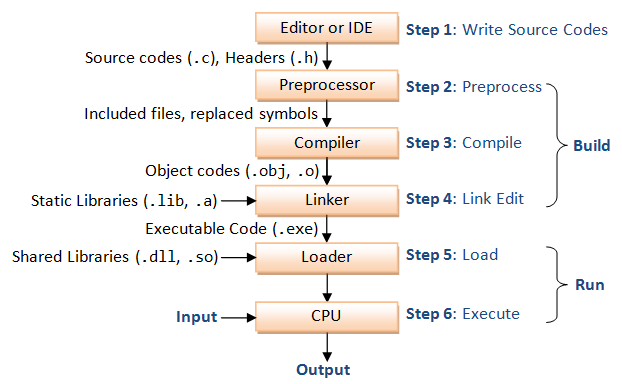A preprocessor directive, which begins with a # sign (such as #include, #define), tells the preprocessor to perform a certain action (such as including a header file, or performing text replacement), before compiling the source code into object code. Preprocessor directives are not programming statements, and therefore should NOT be terminated with a semi-colon. For example,
#include <stdio.h> // To include the IO library header #include <math.h> // To include the Math library header #define PI 3.14159265 // To substitute the term PI with 3.14159265 in this file // DO NOT terminate preprocessor directive with a semi-colon
In almost all of the C programs, we use #include <stdio.h> to include the input/output stream library header into our program, so as to use the IO library function to carry out input/output operations (such as printf() and scanf()).
More on preprocessor directives later.
Variables and Types
Variables
Computer programs manipulate (or process) data. A variable is used to store a piece of data for processing. It is called variable because you can change the value stored.
More precisely, a variable is a named storage location, that stores a value of a particular data type. In other words, a variable has a name, a type and stores a value.
- A variable has a name (or identifier), e.g.,
radius,area,age,height. The name is needed to uniquely identify each variable, so as to assign a value to the variable (e.g.,radius=1.2), and retrieve the value stored (e.g.,area = radius*radius*3.1416). - A variable has a type. Examples of type are,
int: for integers (whole numbers) such as123and-456;double: for floating-point or real numbers such as3.1416,-55.66, having a decimal point and fractional part.
- A variable can store a value of that particular type. It is important to take note that a variable in most programming languages is associated with a type, and can only store value of the particular type. For example, a
intvariable can store an integer value such as123, but NOT real number such as12.34, nor texts such as"Hello". - The concept of type was introduced into the early programming languages to simplify interpretation of data made up of 0s and 1s. The type determines the size and layout of the data, the range of its values, and the set of operations that can be applied.
The following diagram illustrates two types of variables: int and double. An int variable stores an integer (whole number). A double variable stores a real number.

Identifiers
An identifier is needed to name a variable (or any other entity such as a function or a class). C imposes the following rules on identifiers:
- An identifier is a sequence of characters, of up to a certain length (compiler-dependent, typically 255 characters), comprising uppercase and lowercase letters
(a-z, A-Z), digits(0-9), and underscore"_". - White space (blank, tab, new-line) and other special characters (such as
+,-,*,/,@,&, commas, etc.) are not allowed. - An identifier must begin with a letter or underscore. It cannot begin with a digit. Identifiers beginning with an underscore are typically reserved for system use.
- An identifier cannot be a reserved keyword or a reserved literal (e.g.,
int,double,if,else,for). - Identifiers are case-sensitive. A
roseis NOT aRose, and is NOT aROSE.
Caution: Programmers don't use blank character in names. It is either not supported, or will pose you more challenges.
Variable Naming Convention
A variable name is a noun, or a noun phrase made up of several words. The first word is in lowercase, while the remaining words are initial-capitalized, with no spaces between words. For example, thefontSize, roomNumber, xMax, yMin, xTopLeft and thisIsAVeryLongVariableName. This convention is also known as camel-case.
Recommendations
- It is important to choose a name that is self-descriptive and closely reflects the meaning of the variable, e.g.,
numberOfStudentsornumStudents. - Do not use meaningless names like
a,b,c,d,i,j,k,i1,j99. - Avoid single-alphabet names, which is easier to type but often meaningless, unless they are common names like
x,y,zfor coordinates,ifor index. - It is perfectly okay to use long names of says 30 characters to make sure that the name accurately reflects its meaning!
- Use singular and plural nouns prudently to differentiate between singular and plural variables. For example, you may use the variable
rowto refer to a single row number and the variablerowsto refer to many rows (such as an array of rows - to be discussed later).
Variable Declaration
To use a variable in your program, you need to first "introduce" it by declaring its name and type, in one of the following syntaxes:
| Syntax | Example |
|---|---|
// Declare a variable of a specified type type identifier; // Declare multiple variables of the same type, separated by commas type identifier-1, identifier-2, ..., identifier-n; // Declare a variable and assign an initial value type identifier = value; // Declare multiple variables with initial values type identifier-1 = value-1, ..., identifier-n = value-n; |
int option; double sum, difference, product, quotient; int magicNumber = 88; double sum = 0.0, product = 1.0; |
Example,
int mark1; // Declare an int variable called mark1 mark1 = 76; // Use mark1 int mark2; // Declare int variable mark2 mark2 = mark1 + 10; // Use mark2 and mark1 double average; // Declare double variable average average = (mark1 + mark2) / 2.0; // Use average, mark1 and mark2 int mark1; // Error: Declare twice mark2 = "Hello"; // Error: Assign value of a different type
Take note that:
- In C, you need to declare the name of a variable before it can be used.
- C is a "strongly-type" language. A variable takes on a type. Once the type of a variable is declared, it can only store a value belonging to this particular type. For example, an
intvariable can hold only integer such as123, and NOT floating-point number such as-2.17or text string such as"Hello". The concept of type was introduced into the early programming languages to simplify interpretation of data made up of 0s and 1s. Knowing the type of a piece of data greatly simplifies its interpretation and processing. - Each variable can only be declared once.
- In C, you can declare a variable anywhere inside the program, as long as it is declared before used. (In C prior to C99, all the variables must be declared at the beginning of functions.) It is recommended that your declare a variable just before it is first used.
- The type of a variable cannot be changed inside the program.
CAUTION: Uninitialized Variables
When a variable is declared, it contains garbage until you assign an initial value. It is important to take note that C does not issue any warning/error if you use a variable before initialize it - which certainly leads to some unexpected results. For example,
1 2 3 4 5 6 7 8 |
#include <stdio.h>
int main() {
int number; // Declared but not initialized
printf("%d\n", number); // Used before initialized
// No warning/error, BUT unexpected result
return 0;
}
|
Constants (const)
Constants are non-modifiable variables, declared with keyword const. Their values cannot be changed during program execution. Also, const must be initialized during declaration. For examples:
const double PI = 3.1415926; // Need to initialize
Constant Naming Convention: Use uppercase words, joined with underscore. For example, MIN_VALUE, MAX_SIZE.
Expressions
An expression is a combination of operators (such as addition '+', subtraction '-', multiplication '*', division '/') and operands (variables or literal values), that can be evaluated to yield a single value of a certain type. For example,
1 + 2 * 3 // give int 7 int sum, number; sum + number // evaluated to an int value double principal, interestRate; principal * (1 + interestRate) // evaluated to a double value
Assignment (=)
An assignment statement:
- assigns a literal value (of the RHS) to a variable (of the LHS); or
- evaluates an expression (of the RHS) and assign the resultant value to a variable (of the LHS).
The RHS shall be a value; and the LHS shall be a variable (or memory address).
The syntax for assignment statement is:
| Syntax | Example |
|---|---|
// Assign the literal value (of the RHS) to the variable (of the LHS) variable = literal-value; // Evaluate the expression (RHS) and assign the result to the variable (LHS) variable = expression; |
number = 88; sum = sum + number; |
The assignment statement should be interpreted this way: The expression on the right-hand-side (RHS) is first evaluated to produce a resultant value (called rvalue or right-value). The rvalue is then assigned to the variable on the left-hand-side (LHS) (or lvalue, which is a location that can hold a rvalue). Take note that you have to first evaluate the RHS, before assigning the resultant value to the LHS. For examples,
number = 8; // Assign literal value of 8 to the variable number number = number + 1; // Evaluate the expression of number + 1, // and assign the resultant value back to the variable number
The symbol "=" is known as the assignment operator. The meaning of "=" in programming is different from Mathematics. It denotes assignment instead of equality. The RHS is a literal value; or an expression that evaluates to a value; while the LHS must be a variable. Note that x = x + 1 is valid (and often used) in programming. It evaluates x + 1 and assign the resultant value to the variable x. x = x + 1 illegal in Mathematics. While x + y = 1 is allowed in Mathematics, it is invalid in programming (because the LHS of an assignment statement must be a variable). Some programming languages use symbol ":=", "←", "->", or "→" as the assignment operator to avoid confusion with equality.
Fundamental Types
Integers: C supports these integer types: char, short, int, long, long long (in C11) in a non-decreasing order of size. The actual size depends on the implementation. The integers (except char) are signed number (which can hold zero, positive and negative numbers). You could use the keyword unsigned [char|short|int|long|long long] to declare an unsigned integers (which can hold zero and positive numbers). There are a total 10 types of integers - signed|unsigned combined with char|short|int|long|long long.
Characters: Characters (e.g., 'a', 'Z', '0', '9') are encoded in ASCII into integers, and kept in type char. For example, character '0' is 48 (decimal) or 30H (hexadecimal); character 'A' is 65 (decimal) or 41H (hexadecimal); character 'a' is 97 (decimal) or 61H (hexadecimal). Take note that the type char can be interpreted as character in ASCII code, or an 8-bit integer. Unlike int or long, which is signed, char could be signed or unsigned, depending on the implementation. You can use signed char or unsigned char to explicitly declare signed or unsigned char.
Floating-point Numbers: There are 3 floating point types: float, double and long double, for single, double and long double precision floating point numbers. float and double are represented as specified by IEEE 754 standard. A float can represent a number between ±1.40239846×10^-45 and ±3.40282347×10^38, approximated. A double can represented a number between ±4.94065645841246544×10^-324 and ±1.79769313486231570×10^308, approximated. Take note that not all real numbers can be represented by float and double, because there are infinite real numbers. Most of the values are approximated.
The table below shows the typical size, minimum, maximum for the primitive types. Again, take note that the sizes are implementation dependent.
| Category | Type | Description | Bytes (Typical) |
Minimum (Typical) |
Maximum (Typical) |
|---|---|---|---|---|---|
| Integers | int (or signed int) |
Signed integer (of at least 16 bits) | 4 (2) | -2147483648 | 2147483647 |
| unsigned int | Unsigned integer (of at least 16 bits) | 4 (2) | 0 | 4294967295 | |
| char | Character (can be either signed or unsigned depends on implementation) |
1 | |||
| signed char | Character or signed tiny integer (guarantee to be signed) |
1 | -128 | 127 | |
| unsigned char | Character or unsigned tiny integer (guarantee to be unsigned) |
1 | 0 | 255 | |
| short (or short int) (or signed short) (or signed short int) |
Short signed integer (of at least 16 bits) | 2 | -32768 | 32767 | |
| unsigned short (or unsigned shot int) |
Unsigned short integer (of at least 16 bits) | 2 | 0 | 65535 | |
| long (or long int) (or signed long) (or signed long int) |
Long signed integer (of at least 32 bits) | 4 (8) | -2147483648 | 2147483647 | |
| unsigned long (or unsigned long int) |
Unsigned long integer (of at least 32 bits) | 4 (8) | 0 | same as above | |
| long long (or long long int) (or signed long long) (or signed long long int) |
Very long signed integer (of at least 64 bits) | 8 | -263 | 263-1 | |
| unsigned long long (or unsigned long long int) |
Unsigned very long integer (of at least 64 bits) | 8 | 0 | 264-1 | |
| Real Numbers | float | Floating-point number, ≈7 digits (IEEE 754 single-precision floating point format) |
4 | 3.4e38 | 3.4e-38 |
| double | Double precision floating-point number, ≈15 digits (IEEE 754 double-precision floating point format) |
8 | 1.7e308 | 1.7e-308 | |
| long double | Long double precision floating-point number, ≈19 digits (IEEE 754 quadruple-precision floating point format) |
12 (8) | |||
| Wide Characters |
wchar_t | Wide (double-byte) character | 2 (4) |
In addition, many C library functions use a type called size_t, which is equivalent (typedef) to a unsigned int, meant for counting, size or length, with 0 and positive integers.
*The sizeof Operator
C provides an unary sizeof operator to get the size of the operand (in bytes). The following program uses sizeof operator to print the size of the fundamental types.
1 2 3 4 5 6 7 8 9 10 11 12 13 14 15 16 |
/*
* Print Size of Fundamental Types (SizeofTypes.cpp).
*/
#include <stdio.h>
int main() {
printf("sizeof(char) is %d bytes.\n", sizeof(char));
printf("sizeof(short) is %d bytes.\n", sizeof(short));
printf("sizeof(int) is %d bytes.\n", sizeof(int));
printf("sizeof(long) is %d bytes.\n", sizeof(long));
printf("sizeof(long long) is %d bytes.\n", sizeof(long long));
printf("sizeof(float) is %d bytes.\n", sizeof(float));
printf("sizeof(double) is %d bytes.\n", sizeof(double));
printf("sizeof(long double) is %d bytes.\n", sizeof(long double));
return 0;
}
|
sizeof(char) is 1 bytes. sizeof(short) is 2 bytes. sizeof(int) is 4 bytes. sizeof(long) is 4 bytes. sizeof(long long) is 8 bytes. sizeof(float) is 4 bytes. sizeof(double) is 8 bytes. sizeof(long double) is 12 bytes.
The results may vary among different systems.
*Header <limits.h>
The limits.h header contains information about limits of integer type. For example,
1 2 3 4 5 6 7 8 9 10 11 12 13 14 15 16 17 18 19 20 21 22 23 24 25 |
/* Test integer limits in <limits.h> header */ #include <stdio.h> #include <limits.h> // integer limits int main() { printf("int max = %d\n", INT_MAX); printf("int min = %d\n", INT_MIN); printf("unsigned int max = %u\n", UINT_MAX); printf("long max = %ld\n", LONG_MAX); printf("long min = %ld\n", LONG_MIN); printf("unsigned long max = %lu\n", ULONG_MAX); printf("long long max = %lld\n", LLONG_MAX); printf("long long min = %lld\n", LLONG_MIN); printf("unsigned long long max = %llu\n", ULLONG_MAX); printf("Bits in char = %d\n", CHAR_BIT); printf("char max = %d\n", CHAR_MAX); printf("char min = %d\n", CHAR_MIN); printf("signed char max = %d\n", SCHAR_MAX); printf("signed char min = %d\n", SCHAR_MIN); printf("unsigned char max = %u\n", UCHAR_MAX); return 0; } |
int max = 2147483647 int min = -2147483648 unsigned int max = 4294967295 long max = 2147483647 long min = -2147483648 unsigned long max = 4294967295 long long max = 9223372036854775807 long long min = -9223372036854775808 unsigned long long max = 18446744073709551615 Bits in char = 8 char max = 127 char min = -128 signed char max = 127 signed char min = -128 unsigned char max = 255
Again, the outputs depend on the system.
The minimum of unsigned integer is always 0. The other constants are SHRT_MAX, SHRT_MIN, USHRT_MAX, LONG_MIN, LONG_MAX, ULONG_MAX. Try inspecting this header (search for limits.h under your compiler).
*Header <float.h>
Similarly, the float.h header contain information on limits for floating point numbers, such as minimum number of significant digits (FLT_DIG, DBL_DIG, LDBL_DIG for float, double and long double), number of bits for mantissa (FLT_MANT_DIG, DBL_MANT_DIG, LDBL_MANT_DIG), maximum and minimum exponent values, etc. Try inspecting this header (search for cfloat under your compiler).
Choosing Types
As a programmer, you need to choose variables and decide on the type of the variables to be used in your programs. Most of the times, the decision is intuitive. For example, use an integer type for counting and whole number; a floating-point type for number with fractional part, char for a single character, and boolean for binary outcome.
Rule of Thumb
- Use
intfor integer anddoublefor floating point numbers. Usebyte,short,longandfloatonly if you have a good reason to choose that specific precision. - Use
int(orunsigned int) for counting and indexing, NOT floating-point type (floatordouble). This is because integer type are precise and more efficient in operations. - Use an integer type if possible. Use a floating-point type only if the number contains a fractional part.
Read my article on "Data Representation" if you wish to understand how the numbers and characters are represented inside the computer memory. In brief, It is important to take note that char '1' is different from int 1, short 1, float 1.0, double 1.0, and String "1". They are represented differently in the computer memory, with different precision and interpretation. For example, short 1 is "00000000 00000001", int 1 is "00000000 00000000 00000000 00000001", long long 1 is "00000000 00000000 00000000 00000000 00000000 00000000 00000000 00000001", float 1.0 is "0 01111111 0000000 00000000 00000000", double 1.0 is "0 01111111111 0000 00000000 00000000 00000000 00000000 00000000 00000000", char '1' is "00110001".
There is a subtle difference between int 0 and double 0.0.
Furthermore, you MUST know the type of a value before you can interpret a value. For example, this value "00000000 00000000 00000000 00000001" cannot be interpreted unless you know the type.
*The typedef Statement
Typing "unsigned int" many time can get annoying. The typedef statement can be used to create a new name for an existing type. For example, you can create a new type called "uint" for "unsigned int" as follow. You should place the typedef immediately after #include. Use typedef with care because it makes the program hard to read and understand.
typedef unsigned int uint;
Many C compilers define a type called size_t, which is a typedef of unsigned int.
typedef unsigned int size_t;
Output via printf() Function
C programs use function printf() of library stdio to print output to the console. You need to issue a so-called preprocessor directive "#include <stdio.h>" to use printf().
To print a string literal such as "Hello, world", simply place it inside the parentheses, as follow:
printf(aStringLiteral);
For example,
printf("Hello, world\n");
Hello, world _
The \n represents the newline character. Printing a newline advances the cursor (denoted by _ in the above example) to the beginning of next line. printf(), by default, places the cursor after the printed string, and does not advance the cursor to the next line. For example,
printf("Hello");
printf(", ");
printf("world!");
printf("\n");
printf("Hello\nworld\nagain\n");
Hello, world! Hello world again _
Formatted Output via printf()
The "f" in printf() stands for "formatted" printing. To do formatted printing, you need to use the following syntax:
printf(formattingString, variable1, variable2, ...)
The formattingString is a string composing of normal texts and conversion specifiers. Normal texts will be printed as they are. A conversion specifier begins with a percent sign (%), followed by a code to specify the type of variable and format of the output (such as the field width and number of decimal places). For example, %d denotes an int; %3d for an int with field-width of 3. The conversion specifiers are used as placeholders, which will be substituted by the variables given after the formatting string in a sequential manner. For example,
1 2 3 4 5 6 7 8 9 10 11 12 13 14 |
/* * Test formatted printing for int (TestPrintfInt.c) */ #include <stdio.h> int main() { int number1 = 12345, number2 = 678; printf("Hello, number1 is %d.\n", number1); // 1 format specifier printf("number1=%d, number2=%d.\n", number1, number2); // 2 format specifiers printf("number1=%8d, number2=%5d.\n", number1, number2); // Set field-widths printf("number1=%08d, number2=%05d.\n", number1, number2); // Pad with zero printf("number1=%-8d, number2=%-5d.\n", number1, number2); // Left-align return 0; } |
Hello, number1 is 12345. number1=12345, number2=678. number1= 12345, number2= 678. number1=00012345, number2=00678. number1=12345 , number2=678 .
Type Conversion Code
The commonly-used type conversion codes are:
| Type | Type Conversion Code | Type & Format |
|---|---|---|
| Integers | %d (or %i) |
(signed) int |
%u |
unsigned int |
|
%o |
int in octal |
|
%x, %X |
int in hexadecimal (%X uses uppercase A-F) |
|
%hd, %hu |
short, unsigned short |
|
%ld, %lu |
long, unsigned long |
|
%lld, %llu |
long long, unsigned long long |
|
| Floating-point | %f |
float in fixed notation |
%e, %E |
float in scientific notation |
|
%g, %G |
float in fixed/scientific notation depending on its value |
|
%f, %lf (printf), %lf (scanf) |
double: Use %f or %lf in printf(), but %lf in scanf(). |
|
%Lf, %Le, %LE, %Lg, %LG |
long double |
|
| Character | %c |
char |
| String | %s |
string |
Notes:
- For
double, you must use%lf(for long float) inscanf()(or%le,%lE,%lg,%lG), but you can use either%for%lfinprintf()(or%e,%E,%g,%G,%le,%lE,%lg,%lG). - Use
%%to print a%in the formatting string.
For example,
int anInt = 12345;
float aFloat = 55.6677;
double aDouble = 11.2233;
char aChar = 'a';
char aStr[] = "Hello";
printf("The int is %d.\n", anInt);
//The int is 12345.
printf("The float is %f.\n", aFloat);
//The float is 55.667702.
printf("The double is %lf.\n", aDouble);
//The double is 11.223300.
printf("The char is %c.\n", aChar);
//The char is a.
printf("The string is %s.\n", aStr);
//The string is Hello.
printf("The int (in hex) is %x.\n", anInt);
//The int (in hex) is 3039.
printf("The double (in scientific) is %le.\n", aDouble);
//The double (in scientific) is 1.122330e+01.
printf("The float (in scientific) is %E.\n", aFloat);
//The float (in scientific) is 5.566770E+01.
Using the wrong type conversion code usually produces garbage.
Field Width
You can optionally specify a field-width before the type conversion code, e.g., %3d, %6f, %20s. If the value to be formatted is shorter than the field width, it will be padded with spaces (by default). Otherwise, the field-width will be ignored. For example,
int number = 123456;
printf("number=%d.\n", number);
// number=123456.
printf("number=%8d.\n", number);
// number= 123456.
printf("number=%3d.\n", number); // Field-width too short. Ignored.
// number=123456.
Precision (Decimal Places) for Floating-point Numbers
For floating-point numbers, you can optionally specify the number of decimal places to be printed, e.g., %6.2f, %8.3f. For example,
double value = 123.14159265;
printf("value=%lf;\n", value);
//value=123.141593;
printf("value=%6.2lf;\n", value);
//value=123.14;
printf("value=%9.4lf;\n", value);
//value= 123.1416;
printf("value=%3.2lf;\n", value); // Field-width too short. Ignored.
//value=123.14;
Alignment
The output are right-aligned by default. You could include a "-" flag (before the field width) to ask for left-aligned. For example,
int i1 = 12345, i2 = 678;
printf("Hello, first int is %d, second int is %5d.\n", i1, i2);
//Hello, first int is 12345, second int is 678.
printf("Hello, first int is %d, second int is %-5d.\n", i1, i2);
//Hello, first int is 12345, second int is 678 .
char msg[] = "Hello";
printf("xx%20sxx\n", msg);
//xx Helloxx
printf("xx%-20sxx\n", msg);
//xxHello xx
Others
+(plus sign): display plus or minus sign preceding the number.#or0: Pad with leading#or0.
C11's printf_s()/scanf_s()
C11 introduces more secure version of printf()/scanf() called printf_s()/scanf_s() to deal with mismatched conversion specifiers. Microsoft Visual C implemented its own versions of printf_s()/scanf_s() before C11, and issues a deprecated warning for using printf()/scanf().
Input via scanf() Function
In C, you can use scanf() function of <stdio.h> to read inputs from keyboard. scanf() uses the type-conversion code like printf(). For example,
1 2 3 4 5 6 7 8 9 10 11 12 13 14 15 16 17 18 19 20 21 22 23 24 |
/* * TestScanf.c */ #include <stdio.h> int main() { int anInt; float aFloat; double aDouble; printf("Enter an int: "); // Prompting message scanf("%d", &anInt); // Read an int from keyboard and assign to variable anInt. printf("The value entered is %d.\n", anInt); printf("Enter a floating-point number: "); // Prompting message scanf("%f", &aFloat); // Read a double from keyboard and assign to variable aFloat. printf("The value entered is %f.\n", aFloat); printf("Enter a floating-point number: "); // Prompting message scanf("%lf", &aDouble); // Read a double from keyboard and assign to variable aDouble. printf("The value entered is %lf.\n", aDouble); return 0; } |
Notes:
- To place the input into a variable in
scanf(), you need to prefix the variable name by an ampersand sign (&). The ampersand (&) is called address-of operator, which will be explained later. However, it is important to stress that missing ampersand (&) is a common error. - For double, you must use type conversion code
%lfforscanf(). You could use%for%lfforprintf().
Return-Value for scanf()
The scanf() returns an int indicating the number of values read.
For example,
int number1 = 55, number2 = 66;
int rcode = scanf("%d", &number);
printf("return code is %d\n", rcode);
printf("number1 is %d\n", number1);
printf("number2 is %d\n", number2);
The scanf() returns 1 if user enters an integer which is read into the variable number. It returns 0 if user enters a non-integer (such as "hello"), and variable number is not assigned.
int number1 = 55, number2 = 66;
int rcode = scanf("%d%d", &number1, &number2);
printf("return code is %d\n", rcode);
printf("number1 is %d\n", number1);
printf("number2 is %d\n", number2);
The scanf() returns 2 if user enters two integers that are read into number1 and number2. It returns 1 if user enters an integer followed by a non-integer, and number2 will not be affected. It returns 0 if user enters a non-integer, and both number1 and number2 will not be affected.
Checking the return code of scanf() is recommended for secure coding.
Literals for Fundamental Types and String
A literal is a specific constant value, such as 123, -456, 3.14, 'a', "Hello", that can be assigned directly to a variable; or used as part of an expression. They are called literals because they literally and explicitly identify their values.
Integer Literals
A whole number, such as 123 and -456, is treated as an int, by default. For example,
int number = -123; int sum = 4567; int bigSum = 8234567890; // ERROR: this value is outside the range of int
An int literal may precede with a plus (+) or minus (-) sign, followed by digits. No commas or special symbols (e.g., $ or space) is allowed (e.g., 1,234 and $123 are invalid). No preceding 0 is allowed too (e.g., 007 is invalid).
Besides the default base 10 integers, you can use a prefix '0' (zero) to denote a value in octal, prefix '0x' for a value in hexadecimal, and prefix '0b' for binary value (in some compilers), e.g.,
int number1 = 1234; // Decimal int number2 = 01234; // Octal 1234, Decimal 2322 int number3 = 0x1abc; // hexadecimal 1ABC, decimal 15274 int number4 = 0b10001001; // binary (may not work in some compilers)
A long literal is identified by a suffix 'L' or 'l' (avoid lowercase, which can be confused with the number one). A long long int is identified by a suffix 'LL'. You can also use suffix 'U' for unsigned int, 'UL' for unsigned long, and 'ULL' for unsigned long long int. For example,
long number = 12345678L; // Suffix 'L' for long long sum = 123; // int 123 auto-casts to long 123L long long bigNumber = 987654321LL; // Need suffix 'LL' for long long int
No suffix is needed for short literals. But you can only use integer values in the permitted range. For example,
short smallNumber = 1234567890; // ERROR: this value is outside the range of short. short midSizeNumber = -12345;
Floating-point Literals
A number with a decimal point, such as 55.66 and -33.44, is treated as a double, by default. You can also express them in scientific notation, e.g., 1.2e3, -5.5E-6, where e or E denotes the exponent in power of 10. You could precede the fractional part or exponent with a plus (+) or minus (-) sign. Exponent shall be an integer. There should be no space or other characters (e.g., space) in the number.
You MUST use a suffix of 'f' or 'F' for float literals, e.g., -1.2345F. For example,
float average = 55.66; // Error! RHS is a double. Need suffix 'f' for float. float average = 55.66f;
Use suffix 'L' (or 'l') for long double.
Character Literals and Escape Sequences
A printable char literal is written by enclosing the character with a pair of single quotes, e.g., 'z', '$', and '9'. In C, characters are represented using 8-bit ASCII code, and can be treated as a 8-bit signed integers in arithmetic operations. In other words, char and 8-bit signed integer are interchangeable. You can also assign an integer in the range of [-128, 127] to a char variable; and [0, 255] to an unsigned char.
You can find the ASCII code table HERE.
For example,
char letter = 'a'; // Same as 97 char anotherLetter = 98; // Same as the letter 'b' printf("%c\n", letter); // 'a' printed printf("%c\n", anotherLetter); // 'b' printed instead of the number anotherLetter += 2; // 100 or 'd' printf("%c\n", anotherLetter); // 'd' printed printf("%d\n", anotherLetter); // 100 printed
Non-printable and control characters can be represented by so-called escape sequences, which begins with a back-slash (\) followed by a code. The commonly-used escape sequences are:
| Escape Sequence | Description | Hex (Decimal) |
|---|---|---|
| \n | New-line (or Line-feed) | 0AH (10D) |
| \r | Carriage-return | 0DH (13D) |
| \t | Tab | 09H (9D) |
| \" | Double-quote (needed to include " in double-quoted string) | 22H (34D) |
| \' | Single-quote | 27H (39D) |
| \\ | Back-slash (to resolve ambiguity) | 5CH (92D) |
Notes:
- New-line (
0AH) and carriage return (0dH), represented by\n, and\rrespectively, are used as line delimiter (or end-of-line, or EOL). However, take note that UNIX/Linux/Mac use\nas EOL, Windows use\r\n. - Horizontal Tab (
09H) is represented as\t. - To resolve ambiguity, characters back-slash (
\), single-quote (') and double-quote (") are represented using escape sequences\\,\'and\", respectively. This is because a single back-slash begins an escape sequence, while single-quotes and double-quotes are used to enclose character and string. - Other less commonly-used escape sequences are:
\?or?,\afor alert or bell,\bfor backspace,\ffor form-feed,\vfor vertical tab. These may not be supported in some consoles.
The <ctype.h> Header
The ctype.h header provides functions such as isalpha(), isdigit(), isspace(), ispunct(), isalnum(), isupper(), islower() to determine the type of character; and toupper(), tolower() for case conversion.
String Literals
A String literal is composed of zero of more characters surrounded by a pair of double quotes, e.g., "Hello, world!", "The sum is ", "".
String literals may contains escape sequences. Inside a String, you need to use \" for double-quote to distinguish it from the ending double-quote, e.g. "\"quoted\"". Single quote inside a String does not require escape sequence. For example,
printf("Use \\\" to place\n a \" within\ta\tstring\n");
Use \" to place a " within a string
TRY: Write a program to print the following picture. Take note that you need to use escape sequences to print special characters.
'__'
(oo)
+========\/
/ || %%% ||
* ||-----||
"" ""
Example (Literals)
1 2 3 4 5 6 7 8 9 10 11 12 13 14 15 16 17 18 19 |
/* Testing Primitive Types (TestLiteral.c) */ #include <stdio.h> int main() { char gender = 'm'; // char is single-quoted unsigned short numChildren = 8; // [0, 255] short yearOfBirth = 1945; // [-32767, 32768] unsigned int salary = 88000; // [0, 4294967295] double weight = 88.88; // With fractional part float gpa = 3.88f; // Need suffix 'f' for float printf("Gender is %c.\n", gender); printf("Number of children is %u.\n", numChildren); printf("Year of birth is %d.\n", yearOfBirth); printf("Salary is %u.\n", salary); printf("Weight is %.2lf.\n", weight); printf("GPA is %.2f.\n", gpa); return 0; } |
Gender is m. Number of children is 8. Year of birth is 1945. Salary is 88000. Weight is 88.88. GPA is 3.88.
Operations
Arithmetic Operators
C supports the following arithmetic operators for numbers: short, int, long, long long, char (treated as 8-bit signed integer), unsigned short, unsigned int, unsigned long, unsigned long long, unsigned char, float, double and long double.
| Operator | Description | Usage | Examples |
|---|---|---|---|
| * | Multiplication | expr1 * expr2 | 2 * 3 → 6; 3.3 * 1.0 → 3.3 |
| / | Division | expr1 / expr2 | 1 / 2 → 0; 1.0 / 2.0 → 0.5 |
| % | Remainder (Modulus) | expr1 % expr2 | 5 % 2 → 1; -5 % 2 → -1 |
| + | Addition | expr1 + expr2 | 1 + 2 → 3; 1.1 + 2.2 → 3.3 |
| - | Subtraction | expr1 - expr2 | 1 - 2 → -1; 1.1 - 2.2 → -1.1 |
All the above operators are binary operators, i.e., they take two operands. The multiplication, division and remainder take precedence over addition and subtraction. Within the same precedence level (e.g., addition and subtraction), the expression is evaluated from left to right. For example, 1+2+3-4 is evaluated as ((1+2)+3)-4.
It is important to take note that int/int produces an int, with the result truncated, e.g., 1/2 → 0 (instead of 0.5).
Take note that C does not have an exponent (power) operator ('^' is exclusive-or, not exponent).
Arithmetic Expressions
In programming, the following arithmetic expression:
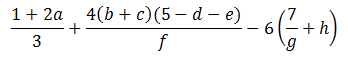must be written as (1+2*a)/3 + (4*(b+c)*(5-d-e))/f - 6*(7/g+h). You cannot omit the multiplication symbol '*' (as in Mathematics).
Like Mathematics, the multiplication '*' and division '/' take precedence over addition '+' and subtraction '-'. Parentheses () have higher precedence. The operators '+', '-', '*', and '/' are left-associative. That is, 1 + 2 + 3 + 4 is treated as (((1+2) + 3) + 4).
Mixed-Type Operations
If both the operands of an arithmetic operation belong to the same type, the operation is carried out in that type, and the result belongs to that type. For example, int/int → int; double/double → double.
However, if the two operands belong to different types, the compiler promotes the value of the smaller type to the larger type (known as implicit type-casting). The operation is then carried out in the larger type. For example, int/double → double/double → double. Hence, 1/2 → 0, 1.0/2.0 → 0.5, 1.0/2 → 0.5, 1/2.0 → 0.5.
For example,
| Type | Example | Operation |
|---|---|---|
| int | 2 + 3 | int 2 + int 3 → int 5 |
| double | 2.2 + 3.3 | double 2.2 + double 3.3 → double 5.5 |
| mix | 2 + 3.3 | int 2 + double 3.3 → double 2.0 + double 3.3 → double 5.3 |
| int | 1 / 2 | int 1 / int 2 → int 0 |
| double | 1.0 / 2.0 | double 1.0 / double 2.0 → double 0.5 |
| mix | 1 / 2.0 | int 1 / double 2.0 → double 1.0 + double 2.0 → double 0.5 |
Example
1 2 3 4 5 6 7 8 9 10 11 12 13 14 15 16 |
/* Testing mix-type arithmetic operations (TestMixTypeOp.c) */ #include <stdio.h> int main() { int i1 = 2, i2 = 4; double d1 = 2.5, d2 = 5.2; printf("%d + %d = %d\n", i1, i2, i1+i2); // 2 + 4 = 6 printf("%.1lf + %.1lf = %.1lf\n", d1, d2, d1+d2); // 2.5 + 5.2 = 7.7 printf("%d + %.1lf = %.1lf\n", i1, d2, i1+d2); // 2 + 5.2 = 7.2 <== mix type printf("%d / %d = %d\n", i1, i2, i1/i2); // 2 / 4 = 0 <== NOTE: truncate printf("%.1lf / %.1lf = %.2lf\n", d1, d2, d1/d2); // 2.5 / 5.2 = 0.48 printf("%d / %.1lf = %.2lf\n", i1, d2, i1/d2); // 2 / 5.2 = 0.38 <== mix type return 0; } |
Overflow/UnderFlow
Study the output of the following program:
1 2 3 4 5 6 7 8 9 10 11 12 13 14 15 16 |
/* Test Arithmetic Overflow/Underflow (TestOverflow.c) */ #include <stdio.h> int main() { // Range of int is [-2147483648, 2147483647] int i1 = 2147483647; // max int printf("%d\n", i1 + 1); // -2147483648 (overflow) printf("%d\n", i1 + 2); // -2147483647 printf("%d\n", i1 * i1); // 1 int i2 = -2147483648; // min int printf("%d\n", i2 - 1); // 2147483647 (underflow) printf("%d\n", i2 - 2); // 2147483646 printf("%d\n", i2 * i2); // 0 return 0; } |
In arithmetic operations, the resultant value wraps around if it exceeds its range (i.e., overflow or underflow). C runtime does not issue an error/warning message but produces incorrect result.
It is important to take note that checking of overflow/underflow is the programmer's responsibility, i.e., your job!
This feature is an legacy design, where processors were slow. Checking for overflow/underflow consumes computation power and reduces performance.
To check for arithmetic overflow (known as secure coding) is tedious. Google for "INT32-C. Ensure that operations on signed integers do not result in overflow" @ www.securecoding.cert.org.
Compound Assignment Operators
Besides the usual simple assignment operator '=' described earlier, C also provides the so-called compound assignment operators as listed:
| Operator | Usage | Description | Example |
|---|---|---|---|
| = | var = expr | Assign the value of the LHS to the variable at the RHS | x = 5; |
| += | var += expr | same as var = var + expr | x += 5; same as x = x + 5 |
| -= | var -= expr | same as var = var - expr | x -= 5; same as x = x - 5 |
| *= | var *= expr | same as var = var * expr | x *= 5; same as x = x * 5 |
| /= | var /= expr | same as var = var / expr | x /= 5; same as x = x / 5 |
| %= | var %= expr | same as var = var % expr | x %= 5; same as x = x % 5 |
Increment/Decrement Operators
C supports these unary arithmetic operators: increment '++' and decrement '--'.
| Operator | Example | Result |
|---|---|---|
| ++ | x++; ++x | Increment by 1, same as x += 1 |
| -- | x--; --x | Decrement by 1, same as x -= 1 |
Example
1 2 3 4 5 6 7 8 9 10 11 12 13 14 15 16 17 18 19 20 21 22 23 24 25 26 |
/* Test on increment (++) and decrement (--) Operator (TestIncDec.cpp) */ #include <stdio.h> int main() { int mark = 76; // declare & assign printf("%d\n", mark); // 76 mark++; // increase by 1 (post-increment) printf("%d\n", mark); // 77 ++mark; // increase by 1 (pre-increment) printf("%d\n", mark); // 78 mark = mark + 1; // also increase by 1 (or mark += 1) printf("%d\n", mark); // 79 mark--; // decrease by 1 (post-decrement) printf("%d\n", mark); // 78 --mark; // decrease by 1 (pre-decrement) printf("%d\n", mark); // 77 mark = mark - 1; // also decrease by 1 (or mark -= 1) printf("%d\n", mark); // 76 return 0; } |
The increment/decrement unary operator can be placed before the operand (prefix operator), or after the operands (postfix operator). They takes on different meaning in operations.
| Operator | Description | Example | Result |
|---|---|---|---|
| ++var | Pre-Increment Increment var, then use the new value of var |
y = ++x; | same as x=x+1; y=x; |
| var++ | Post-Increment Use the old value of var, then increment var |
y = x++; | same as oldX=x; x=x+1; y=oldX; |
| --var | Pre-Decrement | y = --x; | same as x=x-1; y=x; |
| var-- | Post-Decrement | y = x--; | same as oldX=x; x=x-1; y=oldX; |
If '++' or '--' involves another operation, then pre- or post-order is important to specify the order of the two operations. For examples,
x = 5;
printf("%d\n", x++); // Save x (5); Increment x (=6); Print old x (5).
x = 5;
printf("%d\n", ++x); // Increment x (=6); Print x (6).
// This is confusing! Try to avoid! What is i=++i? What is i=i++?
Prefix operator (e.g, ++i) could be more efficient than postfix operator (e.g., i++) in some situations.
Implicit Type-Conversion vs. Explicit Type-Casting
Converting a value from one type to another type is called type casting (or type conversion). There are two kinds of type casting:
- Implicit type-conversion performed by the compiler automatically, and
- Explicit type-casting via an unary type-casting operator in the form of
(new-type)operand.
Implicit (Automatic) Type Conversion
When you assign a value of a fundamental (built-in) type to a variable of another fundamental type, C automatically converts the value to the receiving type, if the two types are compatible. For examples,
- If you assign an
intvalue to adoublevariable, the compiler automatically casts theintvalue to adoubledouble (e.g., from 1 to 1.0) and assigns it to thedoublevariable. - if you assign a
doublevalue of to anintvariable, the compiler automatically casts thedoublevalue to anintvalue (e.g., from 1.2 to 1) and assigns it to theintvariable. The fractional part would be truncated and lost. Some compilers issue a warning/error "possible loss in precision"; others do not.
1 2 3 4 5 6 7 8 9 10 11 12 13 14 15 16 17 18 19 20 |
/* * Test implicit type casting (TestImplicitTypeCast.c) */ #include <stdio.h> int main() { int i; double d; i = 3; d = i; // Assign an int value to double printf("d = %lf\n", d); // d = 3.0 d = 5.5; i = d; // Assign a double value to int printf("i = %d\n", i); // i = 5 (truncated, no warning!) i = 6.6; // Assign a double literal to int printf("i = %d\n", i); // i = 6 (truncated, no warning!) } |
C will not perform automatic type conversion, if the two types are not compatible.
Explicit Type-Casting
You can explicitly perform type-casting via the so-called unary type-casting operator in the form of (new-type)operand. The type-casting operator takes one operand in the particular type, and returns an equivalent value in the new type. Take note that it is an operation that yields a resultant value, similar to an addition operation although addition involves two operands. For example,
printf("%lf\n", (double)5); // int 5 -> double 5.0
printf("%d\n", (int)5.5); // double 5.5 -> int 5
double aDouble = 5.6;
int anInt = (int)aDouble; // return 5 and assign to anInt. aDouble does not change!
Example: Suppose that you want to find the average (in double) of the integers between 1 and 100. Study the following codes:
1 2 3 4 5 6 7 8 9 10 11 12 13 14 15 16 17 |
/* * Testing Explicit Type Cast (Average1to100.c). */ #include <stdio.h> int main() { int sum = 0; double average; int number = 1; while (number <= 100) { sum += number; // Final sum is int 5050 ++number; } average = sum / 100; // Won't work (average = 50.0 instead of 50.5) printf("Average is %lf\n", average); // Average is 50.0 return 0; } |
You don't get the fractional part although the average is a double. This is because both the sum and 100 are int. The result of division is an int, which is then implicitly casted to double and assign to the double variable average. To get the correct answer, you can do either:
average = (double)sum / 100; // Cast sum from int to double before division average = sum / (double)100; // Cast 100 from int to double before division average = sum / 100.0; average = (double)(sum / 100); // Won't work. why?
Example:
1 2 3 4 5 6 7 8 9 10 11 12 13 14 15 16 17 18 19 20 21 22 23 |
/* * Converting between Celsius and Fahrenheit (ConvertTemperature.c) * Celsius = (5/9)(FahrenheitɃ32) * Fahrenheit = (9/5)Celsius+32 */ #include <stdio.h> int main() { double celsius, fahrenheit; printf("Enter the temperature in celsius: "); scanf("%lf", &celsius); fahrenheit = celsius * 9 / 5 + 32; // 9/5*celsius + 32 gives wrong answer! Why? printf("%.2lf degree C is %.2lf degree F\n", celsius, fahrenheit); printf("Enter the temperature in fahrenheit: "); scanf("%lf", &fahrenheit); celsius = (fahrenheit - 32) * 5 / 9; // 5/9*(fahrenheit - 32) gives wrong answer! Why? printf("%.2lf degree F is %.2lf degree C\n", fahrenheit, celsius); return 0; } |
Relational and Logical Operators
Very often, you need to compare two values before deciding on the action to be taken, e.g., if mark is more than or equal to 50, print "PASS".
C provides six comparison operators (or relational operators):
| Operator | Description | Usage | Example (x=5, y=8) |
|---|---|---|---|
| == | Equal to | expr1 == expr2 | (x == y) → false |
| != | Not Equal to | expr1 != expr2 | (x != y) → true |
| > | Greater than | expr1 > expr2 | (x > y) → false |
| >= | Greater than or equal to | expr1 >= expr2 | (x >= 5) → true |
| < | Less than | expr1 < expr2 | (y < 8) → false |
| <= | Less than or equal to | expr1 >= expr2 | (y <= 8) → true |
Each comparison operation involves two operands, e.g., x <= 100. It is invalid to write 1 < x < 100 in programming. Instead, you need to break out the two comparison operations x > 1, x < 100, and join with with a logical AND operator, i.e., (x > 1) && (x < 100), where && denotes AND operator.
C provides four logical operators:
| Operator | Description | Usage |
|---|---|---|
| && | Logical AND | expr1 && expr2 |
| || | Logical OR | expr1 || expr2 |
| ! | Logical NOT | !expr |
| ^ | Logical XOR | expr1 ^ expr2 |
The truth tables are as follows:
| AND (&&) | true | false |
|---|---|---|
| true | true | false |
| false | false | false |
| OR (||) | true | false |
|---|---|---|
| true | true | true |
| false | true | false |
| NOT (!) | true | false |
|---|---|---|
| false | true |
| XOR (^) | true | false |
|---|---|---|
| true | false | true |
| false | true | false |
Example:
// Return true if x is between 0 and 100 (inclusive) (x >= 0) && (x <= 100) // wrong to use 0 <= x <= 100 // Return true if x is outside 0 and 100 (inclusive) (x < 0) || (x > 100) //or !((x >= 0) && (x <= 100)) // Return true if year is a leap year // A year is a leap year if it is divisible by 4 but not by 100, or it is divisible by 400. ((year % 4 == 0) && (year % 100 != 0)) || (year % 400 == 0)
Exercise: Given the year, month (1-12), and day (1-31), write a boolean expression which returns true for dates before October 15, 1582 (Gregorian calendar cut over date).
Ans: (year < 1582) || (year == 1582 && month < 10) || (year == 1582 && month == 10 && day < 15)
Flow Control
There are three basic flow control constructs - sequential, conditional (or decision), and loop (or iteration), as illustrated below.
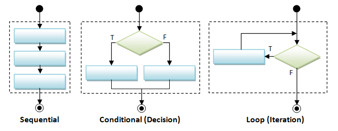Sequential Flow Control
A program is a sequence of instructions. Sequential flow is the most common and straight-forward, where programming statements are executed in the order that they are written - from top to bottom in a sequential manner.
Conditional (Decision) Flow Control
There are a few types of conditionals, if-then, if-then-else, nested-if (if-elseif-elseif-...-else), switch-case, and conditional expression.
| Syntax | Example | Flowchart |
|---|---|---|
// if-then
if ( booleanExpression ) {
true-block ;
}
|
if (mark >= 50) {
printf("Congratulation!\n");
printf("Keep it up!\n");
}
|
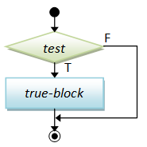 |
// if-then-else
if ( booleanExpression ) {
true-block ;
} else {
false-block ;
}
|
if (mark >= 50) {
printf("Congratulation!\n");
printf("Keep it up!\n");
} else {
printf("Try Harder!\n");
}
|
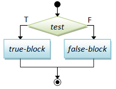 |
// nested-if
if ( booleanExpr-1 ) {
block-1 ;
} else if ( booleanExpr-2 ) {
block-2 ;
} else if ( booleanExpr-3 ) {
block-3 ;
} else if ( booleanExpr-4 ) {
......
} else {
elseBlock ;
} |
if (mark >= 80) {
printf("A\n");
} else if (mark >= 70) {
printf("B\n");
} else if (mark >= 60) {
printf("C\n");
} else if (mark >= 50) {
printf("D\n");
} else {
printf("F\n");
}
|
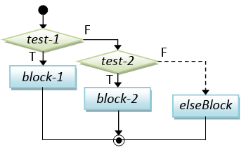 |
// switch-case
switch ( selector ) {
case value-1:
block-1; break;
case value-2:
block-2; break;
case value-3:
block-3; break;
......
case value-n:
block-n; break;
default:
default-block;
} |
char oper; int num1, num2, result;
......
switch (oper) {
case '+':
result = num1 + num2; break;
case '-':
result = num1 - num2; break;
case '*':
result = num1 * num2; break;
case '/':
result = num1 / num2; break;
default:
printf("Unknown operator\n");
} |
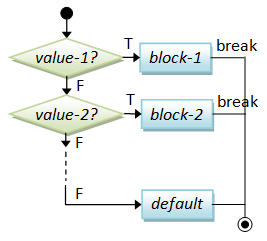 |
"switch-case" is an alternative to the "nested-if". In a switch-case statement, a break statement is needed for each of the cases. If break is missing, execution will flow through the following case. You can use either an int or char variable as the case-selector.
Conditional Operator: A conditional operator is a ternary (3-operand) operator, in the form of booleanExpr ? trueExpr : falseExpr. Depending on the booleanExpr, it evaluates and returns the value of trueExpr or falseExpr.
| Syntax | Example |
|---|---|
booleanExpr ? trueExpr : falseExpr |
printf("%s\n", (mark >= 50) ? "PASS" : "FAIL");
// print either "PASS" or "FAIL"
max = (a > b) ? a : b; // RHS returns a or b
abs = (a > 0) ? a : -a; // RHS returns a or -a |
Braces: You could omit the braces { }, if there is only one statement inside the block. For example,
if (mark >= 50)
printf("PASS\n"); // Only one statement, can omit { } but not recommended
else { // more than one statements, need { }
printf("FAIL\n");
printf("Try Harder!\n");
}
However, I recommend that you keep the braces, even though there is only one statement in the block, to improve the readability of your program.
Exercises
[TODO]
Loop Flow Control
Again, there are a few types of loops: for-loop, while-do, and do-while.
| Syntax | Example | Flowchart |
|---|---|---|
// for-loop
for (init; test; post-proc) {
body ;
}
|
// Sum from 1 to 1000
int sum = 0, number;
for (number = 1; number <= 1000; ++number) {
sum += number;
}
|
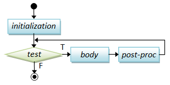 |
// while-do
while ( condition ) {
body ;
}
|
int sum = 0, number = 1;
while (number <= 1000) {
sum += number;
++number;
}
|
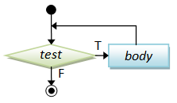 |
// do-while
do {
body ;
}
while ( condition ) ;
|
int sum = 0, number = 1;
do {
sum += number;
++number;
} while (number <= 1000);
|
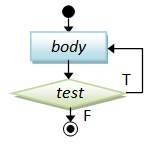 |
The difference between while-do and do-while lies in the order of the body and condition. In while-do, the condition is tested first. The body will be executed if the condition is true and the process repeats. In do-while, the body is executed and then the condition is tested. Take note that the body of do-while will be executed at least once (vs. possibly zero for while-do).
Suppose that your program prompts user for a number between 1 to 10, and checks for valid input, do-while with a boolean flag could be more appropriate.
// Input with validity check bool valid = false; int number; do { // prompt user to enter an int between 1 and 10 ...... // if the number entered is valid, set done to exit the loop if (number >=1 && number <= 10) { valid = true; } } while (!valid); // Need a semi-colon to terminate do-while
Below is an example of using while-do:
// Game loop bool gameOver = false; while (!gameOver) { // play the game ...... // Update the game state // Set gameOver to true if appropriate to exit the game loop ...... }
Example (Counter-Controlled Loop): Prompt user for an upperbound. Sum the integers from 1 to a given upperbound and compute its average.
1 2 3 4 5 6 7 8 9 10 11 12 13 14 15 16 17 18 19 20 21 22 23 24 25 26 27 28 29 30 |
/* * Sum from 1 to a given upperbound and compute their average (SumNumbers.c) */ #include <stdio.h> int main() { int sum = 0; // Store the accumulated sum int upperbound; printf("Enter the upperbound: "); scanf("%d", &upperbound); // Sum from 1 to the upperbound int number; for (number = 1; number <= upperbound; ++number) { sum += number; } printf("Sum is %d\n", sum); printf("Average is %.2lf\n", (double)sum / upperbound); // Sum only the odd numbers int count = 0; // counts of odd numbers sum = 0; // reset sum for (number = 1; number <= upperbound; number = number + 2) { ++count; sum += number; } printf("Sum of odd numbers is %d\n", sum); printf("Average is %.2lf\n", (double)sum / count); } |
Example (Sentinel-Controlled Loop): Prompt user for positive integers, and display the count, maximum, minimum and average. Terminate when user enters -1.
1 2 3 4 5 6 7 8 9 10 11 12 13 14 15 16 17 18 19 20 21 22 23 24 25 26 27 28 29 30 31 32 33 34 35 36 37 38 39 |
/* Prompt user for positive integers and display the count, maximum, minimum and average. Terminate the input with -1 (StatNumbers.c) */ #include <stdio.h> #include <limits.h> // for INT_MAX int main() { int numberIn = 0; // input number (positive integer) int count = 0; // count of inputs, init to 0 int sum = 0; // sum of inputs, init to 0 int max = 0; // max of inputs, init to minimum int min = INT_MAX; // min of inputs, init to maximum (need <climits>) int sentinel = -1; // Input terminating value // Read Inputs until sentinel encountered printf("Enter a positive integer or %d to exit: ", sentinel); scanf("%d", &numberIn); while (numberIn != sentinel) { // Check input for positive integer if (numberIn > 0) { ++count; sum += numberIn; if (max < numberIn) max = numberIn; if (min > numberIn) min = numberIn; } else { printf("error: input must be positive! try again...\n"); } printf("Enter a positive integer or %d to exit: ", sentinel); scanf("%d", &numberIn); } // Print result printf("\n"); printf("Count is %d\n", count); if (count > 0) { printf("Maximum is %d\n", max); printf("Minimum is %d\n", min); printf("Average is %.2lf\n", (double)sum / count); } } |
Program Notes
- In computing, a sentinel value is a special value that indicates the end of data (e.g., a negative value to end a sequence of positive value, end-of-file, null character in the null-terminated string). In this example, we use -1 as the sentinel value to indicate the end of inputs, which is a sequence of positive integers. Instead of hardcoding the value of -1, we use a variable called
sentinelfor flexibility and ease-of-maintenance. - Take note of the while-loop pattern in reading the inputs. In this pattern, you need to repeat the prompting and input statement.
Exercises
[TODO]
Interrupting Loop Flow - "break" and "continue"
The break statement breaks out and exits the current (innermost) loop.
The continue statement aborts the current iteration and continue to the next iteration of the current (innermost) loop.
break and continue are poor structures as they are hard to read and hard to follow. Use them only if absolutely necessary. You can always write the same program without using break and continue.
Example (break): The following program lists the non-prime numbers between 2 and an upperbound.
1 2 3 4 5 6 7 8 9 10 11 12 13 14 15 16 17 18 19 20 21 22 23 |
/* * List non-prime from 1 to an upperbound (NonPrimeList.c). */ #include <stdio.h> #include <math.h> int main() { int upperbound, number, maxFactor, factor; printf("Enter the upperbound: "); scanf("%d", &upperbound); for (number = 2; number <= upperbound; ++number) { // Not a prime, if there is a factor between 2 and sqrt(number) maxFactor = (int)sqrt(number); for (factor = 2; factor <= maxFactor; ++factor) { if (number % factor == 0) { // Factor? printf("%d ", number); break; // A factor found, no need to search for more factors } } } printf("\n"); return 0; } |
Let's rewrite the above program without using break statement. A while loop is used (which is controlled by the boolean flag) instead of for loop with break.
1 2 3 4 5 6 7 8 9 10 11 12 13 14 15 16 17 18 19 20 21 22 23 24 25 26 27 |
/* * List primes from 1 to an upperbound (PrimeList.c). */ #include <stdio.h> #include <math.h> int main() { int upperbound, number, maxFactor, isPrime, factor; printf("Enter the upperbound: "); scanf("%d", &upperbound); for (number = 2; number <= upperbound; ++number) { // Not prime, if there is a factor between 2 and sqrt of number maxFactor = (int)sqrt(number); isPrime = 1; factor = 2; while (isPrime && factor <= maxFactor) { if (number % factor == 0) { // Factor of number? isPrime = 0; } ++factor; } if (isPrime) printf("%d ", number); } printf("\n"); return 0; } |
Example (continue):
// Sum 1 to upperbound, exclude 11, 22, 33,... int upperbound = 100; int sum = 0; int number; for (number = 1; number <= upperbound; ++number) { if (number % 11 == 0) continue; // Skip the rest of the loop body, continue to the next iteration sum += number; } // It is better to re-write the loop as: for (number = 1; number <= upperbound; ++number) { if (number % 11 != 0) sum += number; }
Example (break and continue): Study the following program.
1 2 3 4 5 6 7 8 9 10 11 12 13 14 15 16 17 18 19 |
/* A mystery series (Mystery.c) */
#include <stdio.h>
int main() {
int number = 1;
while (1) {
++number;
if ((number % 3) == 0) continue;
if (number == 133) break;
if ((number % 2) == 0) {
number += 3;
} else {
number -= 3;
}
printf("%d ", number);
}
printf("\n");
return 0;
}
|
Terminating Program
There are a few ways that you can terminate your program, before reaching the end of the programming statements.
exit(): You could invoke the function exit(int exitCode), in <stdlib.h>, to terminate the program and return the control to the Operating System. By convention, return code of zero indicates normal termination; while a non-zero exitCode (-1) indicates abnormal termination. For example,
abort(): The header <stdlib.h> also provide a function called abort(), which can be used to terminate the program abnormally.
if (errorCount > 10) {
printf("too many errors\n");
exit(-1); // Terminate the program
// OR abort();
}
The "return" Statement: You could also use a "return returnValue" statement in the main() function to terminate the program and return control back to the Operating System.
For example,
int main() {
...
if (errorCount > 10) {
printf("too many errors\n");
return -1; // Terminate and return control to OS from main()
}
...
}
Nested Loops
The following diagram illustrates a nested for-loop, i.e., an inner for-loop within an outer for-loop.
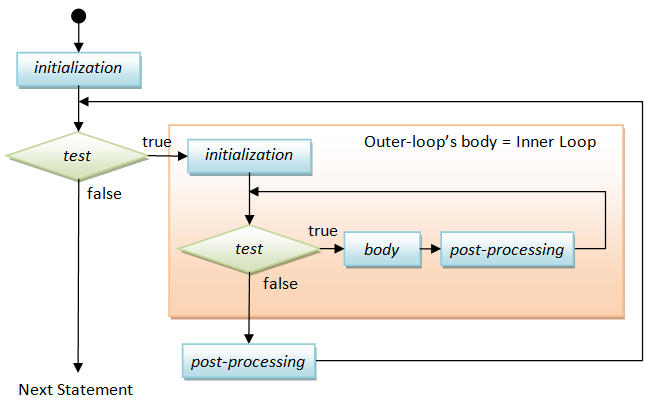Try out the following program, which prints a 8-by-8 checker box pattern using nested loops, as follows:
# # # # # # # # # # # # # # # # # # # # # # # # # # # # # # # # # # # # # # # # # # # # # # # # # # # # # # # # # # # # # # # #
1 2 3 4 5 6 7 8 9 10 11 12 13 14 15 16 |
/* * Print square pattern (PrintSquarePattern.c). */ #include <stdio.h> int main() { int size = 8, row, col; for (row = 1; row <= size; ++row) { // Outer loop to print all the rows for (col = 1; col <= size; ++col) { // Inner loop to print all the columns of each row printf("# "); } printf("\n"); // A row ended, bring the cursor to the next line } return 0; } |
This program contains two nested for-loops. The inner loop is used to print a row of eight "# ", which is followed by printing a newline. The outer loop repeats the inner loop to print all the rows.
Suppose that you want to print this pattern instead (in program called PrintCheckerPattern.cpp):
# # # # # # # # # # # # # # # # # # # # # # # # # # # # # # # # # # # # # # # # # # # # # # # # # # # # # # # # # # # # # # # #
You need to print an additional space for even-number rows. You could do so by adding the following statement before Line 8.
if ((row % 2) == 0) { // print a leading space for even-numbered rows
printf(" ");
}
Exercises
- Print these patterns using nested loop (in a program called
PrintPattern1x). Use a variable calledsizefor the size of the pattern and try out various sizes. You should use as fewprintf()statements as possible.# * # * # * # * # # # # # # # # # # # # # # # # 1 1 # * # * # * # * # # # # # # # # # # # # # # 2 1 1 2 # * # * # * # * # # # # # # # # # # # # 3 2 1 1 2 3 # * # * # * # * # # # # # # # # # # 4 3 2 1 1 2 3 4 # * # * # * # * # # # # # # # # 5 4 3 2 1 1 2 3 4 5 # * # * # * # * # # # # # # 6 5 4 3 2 1 1 2 3 4 5 6 # * # * # * # * # # # # 7 6 5 4 3 2 1 1 2 3 4 5 6 7 # * # * # * # * # # 8 7 6 5 4 3 2 1 1 2 3 4 5 6 7 8 (a) (b) (c) (d) (e)Hints:
The equations for major and opposite diagonals are row = col and row + col = size + 1. Decide on what to print above and below the diagonal. - Print the timetable of 1 to 9, as follows, using nested loop. (Hints: you need to use an if-else statement to check whether the product is single-digit or double-digit, and print an additional space if needed.)
1 2 3 4 5 6 7 8 9 2 4 6 8 10 12 14 16 18 ......
- Print these patterns using nested loop.
# # # # # # # # # # # # # # # # # # # # # # # # # # # # # # # # # # # # # # # # # # # # # # # # # # # # # # # # # # # # # # # # # # # # # # # # # # # # # # # # # # # # # # # # # # # # # # # # # # # # # # # # # # # # # # # # # # # # # # (a) (b) (c) (d) (e)
Some Issues in Flow Control
Dangling else: The "dangling else" problem can be illustrated as follows:
if (i == 0)
if (j == 0)
printf("i and j are zero\n");
else printf("i is not zero\n"); // intend for the outer-if
The else clause in the above codes is syntactically applicable to both the outer-if and the inner-if. The C compiler always associate the else clause with the innermost if (i.e., the nearest if). Dangling else can be resolved by applying explicit parentheses. The above codes are logically incorrect and require explicit parentheses as shown below.
if ( i == 0) {
if (j == 0) printf("i and j are zero\n");
} else {
printf("i is not zero\n"); // non-ambiguous for outer-if
}
Endless Loop: The following constructs:
while (1) { ...... }
is commonly used. It seems to be an endless loop (or infinite loop), but it is usually terminated via a break or return statement inside the loop body. This kind of code is hard to read - avoid if possible by re-writing the condition.
Exercises
[TODO]
Writing Correct and Good Programs
It is important to write programs that produce the correct results. It is also important to write programs that others (and you yourself three days later) can understand, so that the programs can be maintained - I call these programs good programs.
Here are the suggestions:
- Follow established convention so that everyone has the same basis of understanding.
- Format and layout of the source code with appropriate indents, white spaces and white lines. Use 3 or 4 spaces for indent, and blank lines to separate sections of codes.
- Choose good names that are self-descriptive and meaningful, e.g.,
row,col,size,xMax,numStudents. Do not use meaningless names, such asa,b,c,d. Avoid single-alphabet names (easier to type but often meaningless), except common names likes x,y,zfor co-ordinates andifor index. - Provide comments to explain the important as well as salient concepts. Comment your codes liberally.
- Write your program documentation while writing your programs.
- Avoid un-structured constructs, such as
breakandcontinue, which are hard to follow. - Use "mono-space" fonts (such as Consola, Courier New, Courier) for writing/displaying your program.
Programming Errors
There are generally three classes of programming errors:
- Compilation Error (or Syntax Error): can be fixed easily.
- Runtime Error: program halts pre-maturely without producing the results - can also be fixed easily.
- Logical Error: program completes but produces incorrect results. It is easy to detect if the program always produces wrong result. It is extremely hard to fix if the program produces the correct result most of the times, but incorrect result sometimes. For example,
// Can compile and execute, but give wrong result – sometimes! if (mark > 50) { printf("PASS\n"); } else { printf("FAIL\n"); }This kind of errors is very serious if it is not caught before production. Writing good programs helps in minimizing and detecting these errors. A good testing strategy is needed to ascertain the correctness of the program. Software testing is an advanced topics which is beyond our current scope.
Debugging Programs
Here are the common debugging techniques:
- Stare at the screen! Unfortunately, errors usually won't pop-up even if you stare at it extremely hard.
- Study the error messages! Do not close the console when error occurs and pretending that everything is fine. This helps most of the times.
- Insert print statements at appropriate locations to display the intermediate results. It works for simple toy program, but it is neither effective nor efficient for complex program.
- Use a graphic debugger. This is the most effective means. Trace program execution step-by-step and watch the value of variables and outputs.
- Advanced tools such as profiler (needed for checking memory leak and function usage).
- Proper program testing to wipe out the logical errors.
Testing Your Program for Correctness
How to ensure that your program always produces correct result, 100% of the times? It is impossible to try out all the possible outcomes, even for a simple program. Program testing usually involves a set of representative test cases, which are designed to catch the major classes of errors. Program testing is beyond the scope of this writing.
Arrays
Array Declaration and Usage
Suppose that you want to find the average of the marks for a class of 30 students, you certainly do not want to create 30 variables: mark1, mark2, ..., mark30. Instead, You could use a single variable, called an array, with 30 elements.
An array is a list of elements of the same type, identified by a pair of square brackets [ ]. To use an array, you need to declare the array with 3 things: a name, a type and a dimension (or size, or length). The syntax is:
type arrayName[arraylength];
I recommend using a plural name for array, e.g., marks, rows, numbers. For example,
int marks[5]; // Declare an int array called marks with 5 elements double numbers[10]; // Declare an double array of 10 elements // Use #define to specify the length #define SIZE 9 int numbers[SIZE]; // Some compilers support an variable as array length, e.g., const int SIZE = 9; float temps[SIZE]; // Use const int as array length int size; printf("Enter the length of the array: "); scanf("%d", size); float values[size];
Take note that, in C, the value of the elements are undefined after declaration.
You can also initialize the array during declaration with a comma-separated list of values, as follows:
// Declare and initialize an int array of 3 elements int numbers[3] = {11, 33, 44}; // If length is omitted, the compiler counts the elements int numbers[] = {11, 33, 44}; // Number of elements in the initialization shall be equal to or less than length int numbers[5] = {11, 33, 44}; // Remaining elements are zero. Confusing! Don't do this int numbers[2] = {11, 33, 44}; // ERROR: too many initializers // Use {0} or {} to initialize all elements to 0 int numbers[5] = {0}; // First element to 0, the rest also to zero int numbers[5] = {}; // All element to 0 too
Example: Array Declaration and Initialization
1 2 3 4 5 6 7 8 9 10 11 12 13 14 15 16 17 18 19 20 21 22 23 24 25 26 27 28 29 30 31 32 33 34 35 36 37 38 |
/* Test local array initialization (TestArrayInit.c) */ #include <stdio.h> #define SIZE 5 int main() { int i; int a1[SIZE]; // Uninitialized for (i = 0; i < SIZE; ++i) printf("%d ", a1[i]); printf("\n"); // ? ? ? ? ? int a2[SIZE] = {21, 22, 23, 24, 25}; // All elements initialized for (i = 0; i < SIZE; ++i) printf("%d ", a2[i]); printf("\n"); // 21 22 23 24 25 int a3[] = {31, 32, 33, 34, 35}; // Size deduced from init values int a3Size = sizeof(a3)/sizeof(int); printf("Size is %d\n", a3Size); // 5 for (i = 0; i < a3Size; ++i) printf("%d ", a3[i]); printf("\n"); // 31 32 33 34 35 int a4[5] = {41, 42}; // Leading elements initialized, the rests to 0 for (i = 0; i < SIZE; ++i) printf("%d ", a4[i]); printf("\n"); // 41 42 0 0 0 int a5[5] = {0}; // First elements to 0, the rests to 0 too for (i = 0; i < SIZE; ++i) printf("%d ", a5[i]); printf("\n"); // 0 0 0 0 0 int a6[5] = {}; // All elements to 0 too for (i = 0; i < SIZE; ++i) printf("%d ", a6[i]); printf("\n"); // 0 0 0 0 0 // Using variable as the length of array const int SIZE_2 = 5; int a7[SIZE_2]; // okay without initialization int a8[SIZE_2] = {5, 4, 3, 2, 1}; // error: variable-sized object may not be initialized } |
You can refer to an element of an array via an index (or subscript) enclosed within the square bracket [ ]. C's array index begins with zero. For example, suppose that marks is an int array of 5 elements, then the 5 elements are: marks[0], marks[1], marks[2], marks[3], and marks[4].
// Declare & allocate a 5-element int array int marks[5]; // Assign values to the elements marks[0] = 95; marks[1] = 85; marks[2] = 77; marks[3] = 69; marks[4] = 66; printf("%d\n", marks[0]"); printf("%d\n", marks[3] + marks[4];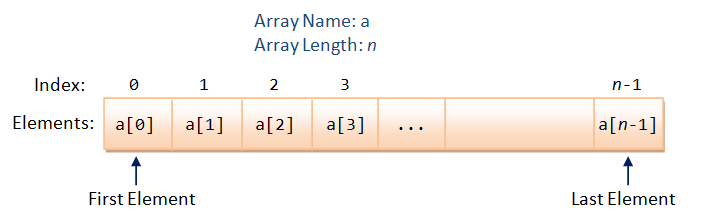
To create an array, you need to known the length (or size) of the array in advance, and allocate accordingly. Once an array is created, its length is fixed and cannot be changed. At times, it is hard to ascertain the length of an array (e.g., how many students in a class?). Nonetheless, you need to estimate the length and allocate an upper bound. This is probably the major drawback of using an array.
You can find the array length using expression sizeof(arrayName)/sizeof(arrayName[0]), where sizeof(arrayName) returns the total bytes of the array and sizeof(arrayName[0]) returns the bytes of first element.
C does not perform array index-bound check. In other words, if the index is beyond the array's bounds, it does not issue a warning/error. For example,
const int size = 5; int numbers[size]; // array index from 0 to 4 // Index out of bound! // Can compiled and run, but could pose very serious side effect! numbers[88] = 999; printf("%d\n", numbers[77]);
This is another pitfall of C. Checking the index bound consumes computation power and depicts the performance. However, it is better to be safe than fast. Newer programming languages such as Java/C# performs array index bound check.
Array and Loop
Arrays works hand-in-hand with loops. You can process all the elements of an array via a loop, for example,
1 2 3 4 5 6 7 8 9 10 11 12 13 14 15 16 17 18 19 20 21 22 23 24 25 |
/*
* Find the mean and standard deviation of numbers kept in an array (MeanStdArray.c).
*/
#include <stdio.h>
#include <math.h>
#define SIZE 7
int main() {
int marks[] = {74, 43, 58, 60, 90, 64, 70};
int sum = 0;
int sumSq = 0;
double mean, stdDev;
int i;
for (i = 0; i < SIZE; ++i) {
sum += marks[i];
sumSq += marks[i] * marks[i];
}
mean = (double)sum/SIZE;
printf("Mean is %.2lf\n", mean);
stdDev = sqrt((double)sumSq/SIZE - mean*mean);
printf("Std dev is %.2lf\n", stdDev);
return 0;
}
|
Exercises
[TODO]
Multi-Dimensional Array
For example,
int[2][3] = { {11, 22, 33}, {44, 55, 66} };
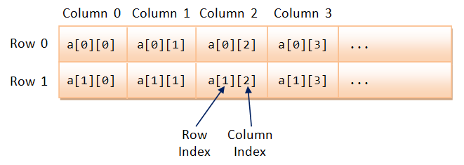
For 2D array (table), the first index is the row number, second index is the column number. The elements are stored in a so-called row-major manner, where the column index runs out first.
Example
1 2 3 4 5 6 7 8 9 10 11 12 13 14 15 16 17 18 19 20 21 |
/* Test Multi-dimensional Array (Test2DArray.c) */ #include <stdio.h> void printArray(const int[][3], int); int main() { int myArray[][3] = {{8, 2, 4}, {7, 5, 2}}; // 2x3 initialized // Only the first index can be omitted and implied printArray(myArray, 2); return 0; } // Print the contents of rows-by-3 array (columns is fixed) void printArray(const int array[][3], int rows) { int i, j; for (i = 0; i < rows; ++i) { for (j = 0; j < 3; ++j) { printf("%d ", array[i][j]); } printf("\n"); } } |
Functions
Why Functions?
At times, a certain portion of codes has to be used many times. Instead of re-writing the codes many times, it is better to put them into a "subroutine", and "call" this "subroutine" many time - for ease of maintenance and understanding. Subroutine is called method (in Java) or function (in C/C++).
The benefits of using functions are:
- Divide and conquer: construct the program from simple, small pieces or components. Modularize the program into self-contained tasks.
- Avoid repeating codes: It is easy to copy and paste, but hard to maintain and synchronize all the copies.
- Software Reuse: you can reuse the functions in other programs, by packaging them into library codes.
Two parties are involved in using a function: a caller who calls the function, and the function called. The caller passes argument(s) to the function. The function receives these argument(s), performs the programmed operations within the function's body, and returns a piece of result back to the caller.
Using Functions
Get Started with an Example
Suppose that we need to evaluate the area of a circle many times, it is better to write a function called getArea(), and re-use it when needed.
1 2 3 4 5 6 7 8 9 10 11 12 13 14 15 16 17 18 19 20 21 22 23 24 |
/* Test Function (TestFunction.c) */ #include <stdio.h> const int PI = 3.14159265; // Function Prototype (Function Declaration) double getArea(double radius); int main() { double radius1 = 1.1, area1, area2; // call function getArea() area1 = getArea(radius1); printf("area 1 is %.2lf\n", area1); // call function getArea() area2 = getArea(2.2); printf("area 2 is %.2lf\n", area2); // call function getArea() printf("area 3 is %.2lf\n", getArea(3.3)); } // Function Definition // Return the area of a circle given its radius double getArea(double radius) { return radius * radius * PI; } |
area 1 is 3.63 area 2 is 14.52 area 3 is 32.67
In the above example, a reusable function called getArea() is defined, which receives a parameter (in double) from the caller, performs the calculation, and return a piece of result (in double) to the caller. In the main(), we invoke getArea() functions thrice, each time with a different parameter.
In C, you need to declare a function prototype (before the function is used), and provide a function definition, with a body containing the programmed operations.
Function Definition
The syntax for function definition is as follows:
returnValueType functionName ( parameterList ) {
functionBody ;
}
- The parameterList consists of comma-separated parameter-type and parameter-name, i.e.,
param-1-type param-1-name, param-2-type param-2-name,... - The returnValueType specifies the type of the return value, such as
intordouble. An special return type calledvoidcan be used to denote that the function returns no value. In C, a function is allowed to return one value or no value (void). It cannot return multiple values. [C does not allow you to return an array!]
The "return" Statement
Inside the function's body, you could use a return statement to return a value (of the returnValueType declared in the function's header) and pass the control back to the caller. The syntax is:
return expression; // Evaluated to a value of returnValueType declared in function's signature return; // For function with return type of void
Take note that invoking a function (by the caller) transfers the control to the function. The return statement in the function transfers the control back to the caller.
Function Naming Convention
A function's name shall be a verb or verb phrase (action), comprising one or more words. The first word is in lowercase, while the rest are initial-capitalized (known as camel-case). For example, getArea(), setRadius(), moveDown(), isPrime(), etc.
Function Prototype
In C, a function must be declared before it can be called. It can be achieved by either placing the function definition before it is being used, or declare a so-called function prototype.
A function prototype tells the compiler the function's interface, i.e., the return-type, function name, and the parameter type list (the number and type of parameters). The function can now be defined anywhere in the file. For example,
// Function prototype - placed before the function is used. double getArea(double); // without the parameter name int max(int, int);
You could optionally include the parameter names in the function prototype. The names will be ignored by the compiler, but serve as documentation. For example,
// Function Prototype double getArea(double radius); // parameter names are ignored, but serve as documentation int max(int number1, int number2);
Function prototypes are usually grouped together and placed in a so-called header file. The header file can be included in many programs. We will discuss header file later.
Another Example
We have a function called max(int, int), which takes two int and return their maximum. We invoke the max() function from the main().
1 2 3 4 5 6 7 8 9 10 11 12 13 14 15 16 17 18 19 20 |
/* Testing max function (TestMaxFunction.c) */ #include <stdio.h> int maximum(int, int); // Function prototype (declaration) int main() { printf("%d\n", maximum(5, 8)); // Call maximum() with literals int a = 6, b = 9, c; c = maximum(a, b); // Call maximum() with variables printf("%d\n", c); printf("%d\n", maximum(c, 99)); // Call maximum() } // Function definition // A function that returns the maximum of two given int int maximum(int num1, int num2) { return (num1 > num2) ? num1 : num2; } |
The "void" Return Type
Suppose that you need a function to perform certain actions (e.g., printing) without a need to return a value to the caller, you can declare its return-value type as void. In the function's body, you could use a "return;" statement without a return value to return control to the caller. In this case, the return statement is optional. If there is no return statement, the entire body will be executed, and control returns to the caller at the end of the body.
Actual Parameters vs. Formal Parameters
Recall that a function receives arguments from its caller, performs the actions defined in the function's body, and return a value (or nothing) to the caller.
In the above example, the variable (double radius) declared in the signature of getArea(double radius) is known as formal parameter. Its scope is within the function's body. When the function is invoked by a caller, the caller must supply so-called actual parameters (or arguments), whose value is then used for the actual computation. For example, when the function is invoked via "area1 = getArea(radius1)", radius1 is the actual parameter, with a value of 1.1.
Scope of Function's Local Variables and Parameters
All variables, including function's parameters, declared inside a function are available only to the function. They are created when the function is called, and freed (destroyed) after the function returns. They are called local variables because they are local to the function and not available outside the function. They are also called automatic variables, because they are created and destroyed automatically - no programmer's explicit action needed to allocate and deallocate them.
Boolean Functions
A boolean function returns a int value of either 0 or not 0 to the caller.
Suppose that we wish to write a function called isOdd() to check if a given number is odd.
1 2 3 4 5 6 7 8 9 10 11 12 13 14 15 16 17 18 19 20 21 |
/* * Test Boolean function (BooleanfunctionTest.c). */ #include <stdio.h> // Function Prototype int isOdd(int); int main() { printf("%d\n", isOdd(5)); // 1 (true) printf("%d\n", isOdd(6)); // 0 (false) printf("%d\n", isOdd(-5)); // 0 (false) } int isOdd(int number) { if (number % 2 == 1) { return 1; } else { return 0; } } |
This seemingly correct codes produces false for -5, because -5%2 is -1 instead of 1. You may rewrite the condition:
bool isOdd(int number) {
if (number % 2 == 0) {
return false;
} else {
return true;
}
}
The above code produces the correct answer, but is poor. For boolean function, you should simply return the resultant value of the comparison, instead of using a conditional statement, as follow:
int isEven(int number) {
return (number % 2 == 0);
}
int isOdd(int number) {
return !(number % 2 == 0); // OR return !isEven(number);
}
int main() {
int number = -9;
if (isEven(number)) { // Don't write (isEven(number) != 0)
printf("Even\n");
}
if (isOdd(number)) { // Don't write (isOdd(number) != 0)
printf("Odd\n");
}
}
Functions and Arrays
You can also pass arrays into function. However, you also need to pass the size of the array into the function. This is because there is no way to tell the size of the array from the array argument inside the called function.
For example,
Example: Computing the Sum of an Array and Print Array's Contents
1 2 3 4 5 6 7 8 9 10 11 12 13 14 15 16 17 18 19 20 21 22 23 24 25 26 27 28 29 30 31 32 33 34 35 36 37 |
/* Function to compute the sum of an array (SumArray.c) */ #include <stdio.h> // Function prototype int sum(int array[], int size); // Need to pass the array size too void print(int array[], int size); // Test Driver int main() { int a1[] = {8, 4, 5, 3, 2}; print(a1, 5); // {8,4,5,3,2} printf("sum is %d\n", sum(a1, 5)); // sum is 22 } // Function definition // Return the sum of the given array int sum(int array[], int size) { int sum = 0; int i; for (i = 0; i < size; ++i) { sum += array[i]; } return sum; } // Print the contents of the given array void print(int array[], int size) { int i; printf("{"); for (i = 0; i < size; ++i) { printf("%d", array[i]); if (i < size - 1) { printf(","); } } printf("}\n"); } |
Pass-by-Value vs. Pass-by-Reference
There are two ways that a parameter can be passed into a function: pass by value vs. pass by reference.
Pass-by-Value
In pass-by-value, a "copy" of argument is created and passed into the function. The invoked function works on the "clone", and cannot modify the original copy. In C, fundamental types (such as int and double) are passed by value. That is, you cannot modify caller's value inside the function - there is no side effect.
Example (Fundamental Types are Passed by Value)
1 2 3 4 5 6 7 8 9 10 11 12 13 14 15 16 17 18 19 20 21 |
/* Fundamental types are passed by value into Function (TestPassByValue.c) */ #include <stdio.h> // Function prototypes int inc(int number); // Test Driver int main() { int n = 8; printf("Before calling function, n is %d\n", n); // 8 int result = inc(n); printf("After calling function, n is %d\n", n); // 8 printf("result is %d\n", result); // 9 } // Function definitions // Return number+1 int inc(int number) { ++number; // Modify parameter, no effect to caller return number; } |
Pass-by-Reference
On the other hand, in pass-by-reference, a reference of the caller's variable is passed into the function. In other words, the invoked function works on the same data. If the invoked function modifies the parameter, the same caller's copy will be modified as well.
In C, arrays are passed by reference. That is, you can modify the contents of the caller's array inside the invoked function - there could be side effect in passing arrays into function.
C does not allow functions to return an array. Hence, if you wish to write a function that modifies the contents of an array (e.g., sorting the elements of an array), you need to rely on pass-by-reference to work on the same copy inside and outside the function. Recall that in pass-by-value, the invoked function works on a clone copy and has no way to modify the original copy.
Example (Array is passed by Reference): Increment Each Element of an Array
1 2 3 4 5 6 7 8 9 10 11 12 13 14 15 16 17 18 19 20 21 22 23 24 25 26 27 28 29 30 31 32 33 34 35 36 37 38 39 40 41 |
/* Function to increment each element of an array (IncrementArray.c) */ #include <stdio.h> // Function prototypes void inc(int array[], int size); void print(int array[], int size); // Test Driver int main() { int a1[] = {8, 4, 5, 3, 2}; // Before increment print(a1, 5); // {8,4,5,3,2} // Do increment inc(a1, 5); // Array is passed by reference (having side effect) // After increment print(a1, 5); // {9,5,6,4,3} } // Function definitions // Increment each element of the given array void inc(int array[], int size) { // array[] is not const int i; for (i = 0; i < size; ++i) { array[i]++; // side-effect } } // Print the contents of the given array void print(int array[], int size) { int i; printf("{"); for (i = 0; i < size; ++i) { printf("%d", array[i]); if (i < size - 1) { printf(","); } } printf("}\n"); } |
Array is passed into function by reference. That is, the invoked function works on the same copy of the array as the caller. Hence, changes of array inside the function is reflected outside the function (i.e., side effect).
Why Arrays are Pass-by-Reference?
Array is designed to be passed by reference, instead of by value using a cloned copy. This is because passing huge array by value is inefficient - the huge array needs to be cloned.
"const" Function Parameters
Pass-by-reference risks corrupting the original data. If you do not have the intention of modifying the arrays inside the function, you could use the const keyword in the function parameter. A const function argument cannot be modified inside the function.
Use const whenever possible for passing references as it prevent you from inadvertently modifying the parameters and protects you against many programming errors.
Example: Search an Array using Linear Search
In a linear search, the search key is compared with each element of the array linearly. If there is a match, it returns the index of the array between [0, size-1]; otherwise, it returns -1 or the size of of the array (some implementations deal with only positive indexes). Linear search has complexity of O(n).
1 2 3 4 5 6 7 8 9 10 11 12 13 14 15 16 17 18 19 20 21 22 23 |
/* Search an array for the given key using Linear Search (LinearSearch.c) */ #include <stdio.h> int linearSearch(const int a[], int size, int key); int main() { const int SIZE = 8; int a1[] = {8, 4, 5, 3, 2, 9, 4, 1}; printf("%d\n", linearSearch(a1, SIZE, 8)); // 0 printf("%d\n", linearSearch(a1, SIZE, 4)); // 1 printf("%d\n", linearSearch(a1, SIZE, 99)); // 8 (not found) } // Search the array for the given key // If found, return array index [0, size-1]; otherwise, return size int linearSearch(const int a[], int size, int key) { int i; for (i = 0; i < size; ++i) { if (a[i] == key) return i; } return size; } |
Program Notes:
- [TODO]
Example: Sorting an Array using Bubble Sort
Wiki "Bubble Sort" for the detailed algorithm and illustration. In brief, we pass thru the list, compare two adjacent items and swap them if they are in the wrong order. Repeat the pass until no swaps are needed. For example,
{8,4,5,3,2,9,4,1}
PASS 1 ...
{8,4,5,3,2,9,4,1} => {4,8,5,3,2,9,4,1}
{4,8,5,3,2,9,4,1} => {4,5,8,3,2,9,4,1}
{4,5,8,3,2,9,4,1} => {4,5,3,8,2,9,4,1}
{4,5,3,8,2,9,4,1} => {4,5,3,2,8,9,4,1}
{4,5,3,2,8,9,4,1} => {4,5,3,2,8,4,9,1}
{4,5,3,2,8,4,9,1} => {4,5,3,2,8,4,1,9}
PASS 2 ...
{4,5,3,2,8,4,1,9} => {4,3,5,2,8,4,1,9}
{4,3,5,2,8,4,1,9} => {4,3,2,5,8,4,1,9}
{4,3,2,5,8,4,1,9} => {4,3,2,5,4,8,1,9}
{4,3,2,5,4,8,1,9} => {4,3,2,5,4,1,8,9}
PASS 3 ...
{4,3,2,5,4,1,8,9} => {3,4,2,5,4,1,8,9}
{3,4,2,5,4,1,8,9} => {3,2,4,5,4,1,8,9}
{3,2,4,5,4,1,8,9} => {3,2,4,4,5,1,8,9}
{3,2,4,4,5,1,8,9} => {3,2,4,4,1,5,8,9}
PASS 4 ...
{3,2,4,4,1,5,8,9} => {2,3,4,4,1,5,8,9}
{2,3,4,4,1,5,8,9} => {2,3,4,1,4,5,8,9}
PASS 5 ...
{2,3,4,1,4,5,8,9} => {2,3,1,4,4,5,8,9}
PASS 6 ...
{2,3,1,4,4,5,8,9} => {2,1,3,4,4,5,8,9}
PASS 7 ...
{2,1,3,4,4,5,8,9} => {1,2,3,4,4,5,8,9}
PASS 8 ...
{1,2,3,4,4,5,8,9}
Bubble sort is not efficient, with complexity of O(n2).
1 2 3 4 5 6 7 8 9 10 11 12 13 14 15 16 17 18 19 20 21 22 23 24 25 26 27 28 29 30 31 32 33 34 35 36 37 38 39 40 41 42 43 44 45 46 47 48 49 50 51 52 53 54 |
/* Sorting an array using Bubble Sort (BubbleSort.c) */ #include <stdio.h> void bubbleSort(int a[], int size); void print(const int a[], int size); int main() { const int SIZE = 8; int a[] = {8, 4, 5, 3, 2, 9, 4, 1}; print(a, SIZE); printf("\n"); bubbleSort(a, SIZE); print(a, SIZE); printf("\n"); } // Sort the given array of size void bubbleSort(int a[], int size) { int done = 0; // terminate if no more swap thru a pass int pass = 0; // pass number, for tracing int temp; // use for swapping while (!done) { printf("PASS %d...\n", ++pass); // for tracing done = 1; // Pass thru the list, compare adjacent items and swap // them if they are in wrong order int i; for (i = 0; i < size - 1; ++i) { if (a[i] > a[i+1]) { print(a, size); // for tracing temp = a[i]; a[i] = a[i+1]; a[i+1] = temp; done = 0; // swap detected, one more pass printf("=> "); // for tracing print(a, size); printf("\n"); } } } } // Print the contents of the given array of size void print(const int a[], int size) { int i; printf("{"); for (i = 0; i < size; ++i) { printf("%d", a[i]); if (i < size - 1) printf(","); } printf("} "); } |
Program Notes:
- [TODO]
Example: Sorting an Array using Insertion Sort
Wiki "Insertion Sort" for the algorithm and illustration. In brief, pass thru the list. For each element, compare with all previous elements and insert it at the correct position by shifting the other elements. For example,
{8,4,5,3,2,9,4,1}
{8} {4,5,3,2,9,4,1}
{4,8} {5,3,2,9,4,1}
{4,5,8} {3,2,9,4,1}
{3,4,5,8} {2,9,4,1}
{2,3,4,5,8} {9,4,1}
{2,3,4,5,8,9} {4,1}
{2,3,4,4,5,8,9} {1}
{1,2,3,4,4,5,8,9}
Insertion sort is also not efficient, with complexity of O(n2).
1 2 3 4 5 6 7 8 9 10 11 12 13 14 15 16 17 18 19 20 21 22 23 24 25 26 27 28 29 30 31 32 33 34 35 36 37 38 39 40 41 42 43 44 45 46 47 48 49 50 51 52 53 54 |
/* Sorting an array using Insertion Sort (InsertionSort.c) */ #include <stdio.h> void insertionSort(int a[], int size); void print(const int a[], int iMin, int iMax); int main() { const int SIZE = 8; int a[] = {8, 4, 5, 3, 2, 9, 4, 1}; print(a, 0, SIZE - 1); printf("\n"); insertionSort(a, SIZE); print(a, 0, SIZE - 1); printf("\n"); } // Sort the given array of size using insertion sort void insertionSort(int a[], int size) { int temp; // for shifting elements int i, prev, shift; for (i = 1; i < size; ++i) { // for tracing print(a, 0, i - 1); // already sorted print(a, i, size - 1); // to be sorted printf("\n"); // For element at i, insert into proper position in [0, i-1] // which is already sorted. // Shift down the other elements for (prev = 0; prev < i; ++prev) { if (a[i] < a[prev]) { // insert a[i] at prev, shift the elements down temp = a[i]; for (shift = i; shift > prev; --shift) { a[shift] = a[shift-1]; } a[prev] = temp; break; } } } } // Print the contents of the array in [iMin, iMax] void print(const int a[], int iMin, int iMax) { int i; printf("{"); for (i = iMin; i <= iMax; ++i) { printf("%d" ,a[i]); if (i < iMax) printf(","); } printf("} "); } |
Program Notes:
- [TODO]
Example: Sorting an Array using Selection Sort
Wiki "Selection Sort" for the algorithm and illustration. In brief, Pass thru the list. Select the smallest element and swap with the head of the list. For example,
{8,4,5,3,2,9,4,1}
{} {8,4,5,3,2,9,4,1} => {} {1,4,5,3,2,9,4,8}
{1} {4,5,3,2,9,4,8} => {1} {2,5,3,4,9,4,8}
{1,2} {5,3,4,9,4,8} => {1,2} {3,5,4,9,4,8}
{1,2,3} {5,4,9,4,8} => {1,2,3} {4,5,9,4,8}
{1,2,3,4} {5,9,4,8} => {1,2,3,4} {4,9,5,8}
{1,2,3,4,4} {9,5,8} => {1,2,3,4,4} {5,9,8}
{1,2,3,4,4,5} {9,8} => {1,2,3,4,4,5} {8,9}
{1,2,3,4,4,5,8,9}
Selection sort is also not efficient, with complexity of O(n2).
1 2 3 4 5 6 7 8 9 10 11 12 13 14 15 16 17 18 19 20 21 22 23 24 25 26 27 28 29 30 31 32 33 34 35 36 37 38 39 40 41 42 43 44 45 46 47 48 49 50 51 52 53 54 55 56 57 |
/* Sorting an array using Selection Sort (SelectionSort.c) */ #include <stdio.h> void selectionSort(int a[], int size); void print(const int a[], int iMin, int iMax); int main() { const int SIZE = 8; int a[] = {8, 4, 5, 3, 2, 9, 4, 1}; print(a, 0, SIZE - 1); printf("\n"); selectionSort(a, SIZE); print(a, 0, SIZE - 1); printf("\n"); } // Sort the given array of size using selection sort void selectionSort(int a[], int size) { int temp; // for swapping int i, j; for (i = 0; i < size - 1; ++i) { // for tracing print(a, 0, i - 1); print(a, i, size - 1); // [0, i-1] already sort // Search for the smallest element in [i, size-1] // and swap with a[i] int minIndex = i; // assume fist element is the smallest for (j = i + 1; j < size; ++j) { if (a[j] < a[minIndex]) minIndex = j; } if (minIndex != i) { // swap temp = a[i]; a[i] = a[minIndex]; a[minIndex] = temp; } // for tracing printf("=> "); print(a, 0, i - 1); print(a, i, size - 1); printf("\n"); } } // Print the contents of the array in [iMin, iMax] void print(const int a[], int iMin, int iMax) { int i; printf("{"); for (i = iMin; i <= iMax; ++i) { printf("%d", a[i]); if (i < iMax) printf(","); } printf("} "); } |
Program Notes:
- [TODO]
"const" Fundamental-Type Function Parameters?
You could also use const for fundamental-type function parameters (such as int, double) to prevent the parameters from being modified inside the function. However, as fundamental-type parameters are passed by value (with a cloned copy), there will never be side effect on the caller. We typically do not use the const keyword for fundamental types. In other words, const is used to indicate that there shall NOT be side-effect.
Mathematical Functions (Header <math.h>)
C provides many common-used Mathematical functions in library <math.h>. The signatures of some of these functions are:
sin(x), cos(x), tan(x), asin(x), acos(x), atan(x): Take argument-type and return-type of float, double, long double. |
atan2(y, x): Return arc-tan of y/x. Better than atan(x) for handling 90 degree. |
sinh(x), cosh(x), tanh(x): hyper-trigonometric functions. |
pow(x, y), sqrt(x): power and square root. |
ceil(x), floor(x): returns the ceiling and floor integer of floating point number. |
fabs(x), fmod(x, y): floating-point absolute and modulus. |
exp(x), log(x), log10(x): exponent and logarithm functions. |
Generating Random Numbers
The stdlib.h header provides a function rand(), which generates a pseudo-random integral number between 0 and RAND_MAX (inclusive). RAND_MAX is a constant defined in stdlib.h (typically the maximum value of 16-/32-bit signed integer, such as 32767). You can generate a random number between [0,n) via rand() % n.
rand() generates the same squence of pseudo-random numbers on different invocations. The stblib.h also provides a srand() function to seed or initialize the random number generator. We typically seed it with the current time obtained via time(0) function (in <time.h> header), which returns the number of seconds since January 1st, 1970.
Example 1: Test rand() and srand(time(0))
1 2 3 4 5 6 7 8 9 10 11 12 13 14 15 16 17 18 19 20 21 22 23 24 25 26 27 28 |
/* Test Random Number Generation (TestRand.c) */ #include <stdio.h> #include <stdlib.h> // for rand(), srand() #include <time.h> // for time() int main() { // rand() generate a random number in [0, RAND_MAX] printf("RAND_MAX is %d\n", RAND_MAX); // 32767 // Generate 10 pseudo-random numbers between 0 and 99 // without seeding the generator. // You will get the same sequence, every time you run this program int i; for (i = 0; i < 10; ++i) { printf("%d ", rand() % 100); // need <stdlib.h> header } printf("\n"); // Seed the random number generator with current time srand(time(0)); // need <cstdlib> and <ctime> header // Generate 10 pseudo-random numbers // You will get different sequence on different run, // because the current time is different for (i = 0; i < 10; ++i) { printf("%d ", rand() % 100); // need <stdlib.h> header } printf("\n"); } |
Example 2: Test rand()'s Distribution
We shall test the rand()'s distribution by repeatedly throwing a 6-sided die and count the occurrences.
1 2 3 4 5 6 7 8 9 10 11 12 13 14 15 16 17 18 19 20 21 22 23 |
/* Test rand() distribution by throwing a die repeatedly (TestRandomDie.c) */ #include <stdio.h> #include <stdlib.h> // for rand(), srand() #include <time.h> // for time() const int TOTAL_COUNT = 2000000; // Close to INT_MAX const int NUM_FACES = 6; int frequencies[6] = {0}; // frequencies of 0 to 5, init to zero int main() { srand(time(0)); // seed random number generator with current time // Throw the die and count the frequencies int i; for (i = 0; i < TOTAL_COUNT; ++i) { ++frequencies[rand() % 6]; } // Print statistics for (i = 0; i < NUM_FACES; i++) { printf("%d: %d (%.2lf%)\n", i+1, frequencies[i], 100.0 * frequencies[i] / TOTAL_COUNT); } } |
1: 333109 (16.66%) 2: 333113 (16.66%) 3: 333181 (16.66%) 4: 333562 (16.68%) 5: 333601 (16.68%) 6: 333434 (16.67%)
As seen from the output, rand() is fairly uniformly-distributed over [0, RAND_MAX].
Exercises
[TODO]
Characters and Strings
A C-string is an array of characters terminated with a null character, denoted as '\0' which is equivalent to ASCII 0. For example,
char message[] = {'H', 'e', 'l', 'l', 'o', '\0'};
char message[] = "Hello"; // same as above
Clearly, the length of array is the length of string plus 1, to account for the terminating null character '\0'.
You can use scanf() to input a string, and printf() to print a string, with %s conversion specifier. For example,
1 2 3 4 5 6 7 8 9 10 11 12 13 14 15 16 17 18 19 20 21 22 23 24 |
#include <stdio.h>
#include <string.h>
int main() {
char message[256];
// The length of char array shall be sufficient to hold the string
// plus the terminating null character '\0'
printf("Enter a message: ");
scanf("%s", message);
// Do not place an & before the array variable
printf("The message is: %s\n", message);
// Print up to but not including the terminating null character '\0'
// print each characters
int i;
for (i = 0; message[i] != '\0'; ++i) {
printf("'%c' ", message[i]);
}
printf("\n");
int len = strlen(message);
// Length of string does not include terminating null character '\0'
printf("The length of string is %d\n", len);
}
|
Enter a message: hello The message is: hello 'h' 'e' 'l' 'l' 'o' The length of string is 5
Take note that you need to allocate a char array that is big enough to hold the input string including the terminating null character '\0'.
Character Type and Conversion in <ctype.h> Header
| Function | Description | |
|---|---|---|
int isalpha(int c); |
[a-zA-Z]Control character Punctuation character Printable character Graphical character |
Check the character's type and return true (non-zero) or false (0) |
int isupper(int c); |
[A-Z] |
Check if uppercase/lowercase and return true (non-zero) or false (0) |
int toupper(int c); |
To Uppercase To Lowercase |
Return the uppercase/lowercase character, if c is a lowercase/uppercase character; otherwise, return c. |
Example: [TODO]
String/Number Conversion in <stdlib.h> Header
The stdlib.h contains function prototypes for conversion between string and numbers.
| Function | Description | |
|---|---|---|
int atoi(const char * str); |
String to intString to doubleString to longString to long long |
Convert the str to int/double/long/long long. |
double strtod(const char* str, char** endptr); |
String to doubleString to float |
Convert the str to double/float.If endptr is not a null pointer, it will be set to point to the first character after the number. |
long strtol(const char* str, char** endptr, int base); |
String to longString to unsigned long |
Convert the str to long/unsigned long. |
Example: [TODO]
String Manipulation in <string.h> Header
| Function | Description | |
|---|---|---|
char* strcpy(char* dest, const char* src); |
String copy String copy at most n-chars |
Copy src into dest. Return dest. |
char* strcat(char* dest, const char* src); |
String concatenation String concatenation at most n-char |
Concatenate src into dest.Return dest. |
int strcmp(const char* s1, const char* s2); |
String compare String compare at most n-char |
Comparing s1 and s2.Return 0, less than 0, more than 0 if s1 is the same, less than, more than s2. |
int strlen(const char* str); |
String Length | Return the length of str(excluding terminating null char) |
char* strchr(const char* str, int c); |
Search string for char Search string for char reverse |
Return a pointer to the first/last occurrence of c in strif present. Otherwise, return NULL. |
char* strpbrk(const char* str, const char* pattern); |
Search string for char in pattern | Locate the first occurrence in strof any character in pattern. |
char* strstr(const char* str, const char* substr); |
Search string for sub-string | Return a pointer to the first occurrence of substr in strif present. Otherwise, return NULL. |
char* strspn(const char* str, const char* substr); |
Search string for span of substr Search string for complement span of substr |
|
char* strtok(char* str, char *delimit); |
Split string into tokens | |
void* memcpy(void *dest, const void *src, size_t n); |
Memory block copy Memory block move Memory block compare Search memory block for char Memory block set (fill) |
|
Example: [TODO]
char/string IO in <stdio.h> Header
| Function | Description | |
|---|---|---|
int getchar(); |
Get character (from stdin)Put character (to stdout) |
Input/Output a character from stdin/stdout. |
int getc(FILE *stream); |
Get character (from FILE stream) Put character (to FILE stream) Un-get character (to FILE stream) |
Input/Output a character from FILE stream. |
char* gets(char *str); |
Get string (from stdin)Put string (to stdout) |
Input/Output string from stdin/stdout. |
int sprintf(char *str, const char *format, ...); |
Formatted print (to string) Formatted scan (from string) |
Formatted string input/output. Similar to printf() and scanf(),except that the output/input comes from the str. |
Example: [TODO]
File Input/Output
[TODO]
File IO in <stdio.h> Header
| Function | Description | |
|---|---|---|
FILE* fopen(const char* filename, const char* mode); |
File open File close |
Open/Close a file. |
int fprintf(FILE *stream, const char *format, ...); |
Formatted print to file Formatted scan from file |
Formatted file input/output. Similar to printf()/scanf(),except that the input/output comes from file |
int fgetc(FILE *stream) |
Get character from file Put character to file Get string from file Put string to file |
Unformatted character/string input/output from file |
size_t fread(void *ptr size_t size, size_t count, FILE *stream) |
File read File write Get file position Set file position File seek Tell file |
Direct Access |
void rewind(FILE *stream); |
Rewind file | Set the file position to the beginning |
int fflush(FILE *stream); |
File Flush | |
int feof(FILE *stream); |
Test end-of-file Check file error Print error message |
Open/Close File
To open a file, use fopen(filename, mode). The modes are:
| Mode | Description | |
|---|---|---|
"r" |
Read | Open file for reading. The file shall exist. |
"w" |
Write | Open file for writing. If the file does not exist, create a new file; otherwise, discard existing contents. |
"a" |
Append | Open file for writing. If the file does not exist, create a new file; otherwise, append to the existing file. |
"r+" |
Read/Write | Open file for reading/writing. The file shall exist. |
"w+" |
Read/Write | Open file for reading/writing. If the file does not exist, create a new file; otherwise, discard existing contents. |
"a+" |
Read/Append | Open file for reading/writing. If the file does not exist, create a new file; otherwise, append to the existing file. |
"rb" "wb" "ab" "rb+" "wb+" "ab+" |
For binary files. | |
File Stream
You can use stdin, stdout, stderr to denote standard input stream (keyboard), standard output stream (console) and standard error stream (console).
Sequential-Access File
Example 1: Formatted File Input/Output
1 2 3 4 5 6 7 8 9 10 11 12 13 14 15 16 17 18 19 20 |
/* Test File IO (TestFileIO.c) */
#include <stdio.h>
int main() {
FILE *fin, *fout;
fout = fopen("test.txt", "w");
fprintf(fout, "%d %lf %s\n", 123, 44.55, "Hello");
fclose(fout);
fin = fopen("test.txt", "r");
int i;
double d;
char msg[80];
fscanf(fin, "%d %lf %s", &i, &d, msg);
printf("i is %d\n", i);
printf("d is %lf\n", d);
printf("msg is %s\n", msg);
fclose(fin);
}
|
Example 2
1 2 3 4 5 6 7 8 9 10 11 12 13 14 15 16 17 18 19 |
#include <stdio.h>
#define SIZE 80 // size of string buffer
int main() {
FILE * pFile;
char buffer[SIZE];
pFile = fopen("test.txt" , "r");
if (pFile == NULL) {
perror("Error opening file");
} else {
while (!feof(pFile)) {
if (fgets(buffer, SIZE, pFile) == NULL) break;
fputs (buffer , stdout);
}
fclose(pFile);
}
return 0;
}
|
Direct-Access File IO
[TODO]
Pointers and Dynamic Allocation
[TODO]
Array and Pointer
[TODO]
String as char pointer
In C, an array name is equivalent to a pointer pointing to the first element of the array. For example, if msg is a char array (char msg[256]), then msg is &msg[0].
We can declare and initialize a string via char pointer; and operate the string via char pointer.
1 2 3 4 5 6 7 8 9 10 11 |
#include <stdio.h>
int main() {
char *msg = "hello"; // Append a terminating null character '\0'
char *p;
for (p = msg; *p != '\0'; ++p) {
printf("'%c' ", *p);
}
printf("\n");
}
|
[TODO]
struct, union and enum
[TODO]
Miscellaneous
Bit Operations
[TODO]
C Library Headers
- <stdio.h>: contains function prototypes for standard input/output functions such as
printf()andscanf(). - <stdlib.h>: contains function prototypes for conversion between numbers and texts (e.g.,
atoi(),atof(),strtod()); memory allocation (malloc(),free()); random number generator (rand(),srand()); system utilities (exit(),abort()). - <math.h>: contains function prototypes for mathematical functions (e.g.,
pow(),sqrt()). - <ctype.h>: (character type) contains function prototypes for testing character
properties (isupper(),isalpha(),isspace()) and case conversion (toupper(),tolower()). - <limits.h>, <float.h>: contains integer and float size and limits.
- <string.h>: contains function prototypes for string processing functions (e.g.,
strcpy(),strcat(),strcmp()). - <time.h>: contains function prototypes for date and time functions (e.g.,
time()). - <assert.h>: for assertion (to aid in diagnostics).
- <errno.h>: for error reporting.
- <signal.h>: for raising and handling signals.
- <stdarg.h>: for handling variable argument.
- <stddef.h>: contains common type definition such as
size_t. - <locale.h>:
- <setjmp.h>:
Keywords
ISO C90 (ANSI C 89) has 32 keywords:
- Type:
int,double,long,char,float,short,unsigned,signed,typedef,sizeof(10). - Control:
if,else,switch,case,break,default,for,do,while,continue,goto(11). - Function:
return,void(2) - Data Structure:
struct,enum,union(3) - Memory:
auto,register,extern,const,volatile,static(6).
ISO C99 adds 5 keywords, total of 37:
_Bool,_Complex,_Imaginary,inline,restrict(5).
ISO C11 adds 7 more keywords, total of 44:
_Alignas,_Alignof,_Atomic,_Generic,_Noreturn,_Static_assert,_Thread_local(7).
Link to "C References and Resources"